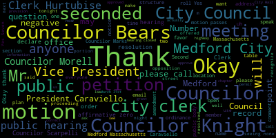

AI-generated transcript of City Council 03-31-20
English | español | português | 中国人 | kreyol ayisyen | tiếng việt | ខ្មែរ | русский | عربي | 한국인
Back to all transcripts
Heatmap of speakers
[Falco]: The 10th regular meeting of the Medford City Council will now come to order. Clark Herbies, would you please call the roll?
[Hurtubise]: Councilor Bears?
[Caraviello]: Present.
[Hurtubise]: Vice President Caraviello?
[Caraviello]: Present.
[Hurtubise]: Councilor Knight? Present. Councilor Marks? Present. Councilor Morell? Present. Councilor Scarpelli?
[Falco]: Present. Councilor Falco? Present. All seven members are present. If I could start off the meeting just by thanking everyone for attending tonight. And if I could also just ask everyone to just please be patient. The technology is new to some of us. Some of us have had experience with it. But we're definitely learning as we go here. This is the first time we've actually had a meeting on Zoom in the history of the City Council. So we ask you for your patience and understanding. And I have a feeling by the time we get done with this, we'll all be pros. But what we're going to try to do is bring to you a meeting tonight, just as if it was like in City Hall. So at this point, I'd like to ask everyone to please rise to salute the flag. I pledge allegiance to the flag of the United States of America, and to the republic for which it stands, one nation, under God, indivisible, with liberty and justice for all.
[Hurtubise]: Thank you.
[Falco]: So tonight's broadcast, the meeting is being broadcast live on channel 22 Comcast and channel 43 Verizon. Pursuant to Governor Baker's March 12th, 2020 order suspending certain provisions of the open meeting law, general law chapter 38, section 18, and the governor's March 15th, 2020 order imposing strict limitation on the number of people that may gather in one place. This meeting of the Medford city council will be conducted via remote participation to the greatest extent possible. specific information in the general guidelines for remote participation by members of the public and or parties with the right and or requirement to attend this meeting can be found on the City of Medford website at www.medfordma.org. For this meeting, members of the public who wish to listen or watch the meeting may do so by accessing the meeting link contained herein. No in-person attendance of members of the public will be permitted. but every effort will be made to ensure that the public can adequately access the proceedings in real time via technological means. In the event that we are unable to do so despite best efforts, we will post on the City of Medford or Medford Community Media an audio or video recording, transcript, or other comprehensive record of proceedings as soon as possible after the meeting. I'm also gonna read a notice from Governor Baker. This is Office of the Governor of Commonwealth of Massachusetts, State House, Boston, Massachusetts, 02133. Order suspending certain provisions of the Open Meeting Law, General Law, Chapter 30A, Section 20. Whereas on March 10, 2020, I, Charles D. Baker, Governor of the Commonwealth of Massachusetts, acting pursuant to the powers provided by Chapter 639 of the Acts of 1950 in Section 2A of Chapter 17 of the General Laws, declare that there now exists in the Commonwealth of Massachusetts a state of emergency due to the outbreak of the 2019 novel coronavirus, COVID-19. And whereas, Many important functions of state and local government are executed by public bodies, as the term is defined in general law chapter 38, section 18, in meetings that are open to the public consistent with the requirements of law and sound public policy in order to ensure active public engagement with contribution to and oversight of the functions of government. Whereas both the Federal Centers for Disease Control and Prevention, the CDC, and Massachusetts Department of Public The DPH have advised residents to take extra measures to put distance between themselves and other people to further reduce the risk of being exposed to COVID-19. Additionally, the CDC and DPH have advised high-risk individuals, including people over the age of 60, anyone with underlying health conditions or a weakened immune system, and pregnant women to avoid large gatherings. Whereas Section 7, 8, and 8A of Chapter 639 of the Acts of 1950 authorized the governor during the effective period of a declared emergency to exercise authority over public assemblages as necessary to protect the health and safety of persons, and whereas low-cost telephones, social media, and other internet-based technologies are currently available that will permit the convening of a public body through virtual means and allow real-time public access to the activities of the public body. And whereas Section 20 of Chapter 30A in implementing regulations issued by the Attorney General currently authorized remote participation by members of public body subject to certain limitations. Now, therefore, I hereby order the following. Number one, if public body is defined in section 18 of chapter 38 of the general laws is hereby relieved from the requirement of section 20 of chapter 38 that conduct its meetings in a public place that is open and physically accessible to the public, provided that the public body makes provisions to ensure public access to the deliberations of the public body for interested members of the public through adequate alternative means. Excuse me. adequate alternative means of public access shall mean measures that provide transparency and permit timely and effective public access to the deliberations of the public body. Such means may include, without limitation, providing public access through telephone, internet, or satellite, enable audio or video conferencing or any other technology that enables the public to clearly follow the proceedings of the public body while those activities are occurring. We have allowance for active real-time participation by members of the public is a specific requirement of a general or special law or regulation of law ordinance or bylaw pursuant to which the proceeding is conducted. Any alternative means of public access must provide for such participation. A municipal public body that, for reasons of economic hardship and despite best efforts, is unable to provide alternative means of public access, that will enable the public to follow the proceedings of the municipal public body as those activities are occurring in real time, may instead post on its municipal website a full and complete transcript, recording, or other comprehensive record of the proceedings as soon as practical upon conclusion of the proceedings. This paragraph shall not apply to proceedings that are conducted pursuant to a general or special law or regulation, or a local ordinance or bylaw that requires allowance for active participation by members of the public. The public body must offer its selected alternative means of access to its proceedings without subscription, toll, or similar charge to the public. Number two, public bodies are hereby authorized to allow remote participation by all members in any meeting of the public body. This requirement that a quorum of the body and the chair be physically present at a specified meeting location as provided in general law chapter 38, section 20D and in 940 CMR 29.104B is hereby suspended. Number three, a public body that elects that elects to conduct its proceedings under the relief provided in sections one or two above shall ensure that any party entitled or required to appear before it shall be able to do so through remote means. And if the party were a member of the public body and participating remotely as provided in section two. Number four, all other provisions of section 18 to 25 of chapter 30A and the Attorney General's implementing regulations shall otherwise remain unchanged and fully applicable to the activities of public bodies. This order is effective immediately. It shall remain in effect until rescinded or until the state of emergency is terminated, whichever happens first.
[Unidentified]: So that message is from Governor Baker. Excuse me.
[Falco]: So before I begin, I want to thank everyone for participating tonight. All of us on the city council hope that you and your family are well. I know we have a lot of people joining us tonight. And just to, so as I began, I just want to say, if you need assistance during these times, please go to the city website for information regarding food or other resources that are available. And please reach out to myself or any of my colleagues if we can help in any way. All of our contact information is on the city website as well. This is an unprecedented event that has solicited an unbelievable amount of support from the community. We would like to thank City Hall employees, volunteers, the administration, and our first responders, and our school teachers, and our school administration as well. And we'd also like to thank our health care workers for working so hard during these unprecedented times. So we thank everyone for logging in and being part of this meeting tonight. Like I said in the beginning, we ask you for your patience. This technology is new to a lot of people that are on this meeting tonight. And we will work together to move the meeting forward hopefully have it resemble a meeting that we would have normally at City Hall. So at this point here, we will begin with our first hearing. We have a number of hearings tonight. So notice of a public hearing. 20-066, notice of a City of Medford notice of a public hearing. A continued public hearing will be held by the Medford City Council via remote access utilizing Zoom. Tuesday evening, March 31st, 2020 at 7 p.m. on a petition from Elias McHale of Alewife Autowork of 33B Mystic Avenue, Medford for class 2 used auto sales use special permit and class 4 auto repair use special permit in accordance with chapter 94 zoning ordinance of the city of Medford, section 94-148D. Table of Use Regulations, Automobile Uses 27A, permission to operate its Class II secondhand motor vehicle sales in Automobile Uses 37. For permission to operate its automotive repair establishment at 33B Mystic Avenue, Medford, Massachusetts, commercial to see to zoning district petition and plan may be seen in the office of the city clerk method City Hall met from Massachusetts call 781-393-2425 for any accommodations AIDS TDD 781-393-2516 the city of method is an e o a a 504 employer and By order of the city Council, Adam L. Hurtubise, City Clerk, advertising the Method transcript on February 20th and February 27th. This is a continued public hearing. At this point in time, I will recognize the chairperson of licensing, Councilor Scarpelli.
[Scarpelli]: Thank you, Mr. President. I know that the gentleman was present at one of our meetings, but I think that I needed some confirmation, and a few of the questions we had were answered. I took a trip to the site. If the petitioner who's on today, if we can, is it Mr. Jankowski?
[Falco]: No, I believe it is Mr. McHale.
[Scarpelli]: McHale?
[Falco]: Yes.
[Scarpelli]: Okay, so if I can, I'm just gonna unmute him. If we can, I know that, how are you, sir? Thank you again for your patience.
[Falco]: The question I have- George, if I may, can we have your name and address for the record?
[SPEAKER_02]: Mike McHale and 229 Curve Street, Dedham Mass, 02026. That's the home address.
[Falco]: Thank you.
[Scarpelli]: Thank you. So the petitioner, uh, what we're looking for, you already have cars on the lot, correct? Yes. Okay. So it, how just enlighten us how you're going to, um, arrange the sales in conjunction with all the cars that you have on that lot. Cause I, what I see is the only. piece that is the traffic issues of the number of cars on the lot right now, Mike. If you can explain that, that'd be a great help.
[SPEAKER_02]: We're going to have four cars for sales up front, and then the rest for repair, we're going to just have behind them.
[Scarpelli]: Okay, so it's really just going to, it's not going to, you're just going to move cars further back into the lot. Yes. Yeah. And I think that was, uh, Mr. President, that was the, the concerns we had being that, uh, there are some residential homes in that area and how it impacted. Truth of the matter is, as I took the tour there, it really doesn't look like it'll have any impact in that neighborhood. And it looks like they're housing cars anyway. We just need to be careful, Mike, that we're not overdoing it. I know the four cars in front sound good. It is mostly a commercial area. We do have other car dealerships up and down Mystic Ave. Every everything else is in order. Mr. President. I know that some of my colleagues have some questions, but I'll let them before I make my My my statement if they have any no, they don't want to ask questions.
[Falco]: Thank you Scarpelli Mr. McHale if I may ask were you at the president at the last meeting?
[Unidentified]: Yes, okay.
[Falco]: Okay, so Thank You mr. President
[Caraviello]: I have a question. How many cars in total are gonna be there? for sale just for just walk and I my other concern was I know There's a lot of heavy equipment. I know it doesn't belong to you but yeah, there's you know, there's a big backhoe there and a bulldozer sir, I'm Concerned with people, you know, they're coming in with children the kids going over around that equipment. Is there any way to Maybe put a temporary fence there or a plastic fence so kids don't go over there when their parents are looking at a car.
[SPEAKER_02]: We can talk to the landlord and I can have him put something because it's that all that equipment belongs to him.
[Caraviello]: I know there is a fence already, but I believe that there's an excavator and that's He had that big backhoe up there and there's a bunch of other stuff and I know some of the neighbors in the past have complained about that equipment being there but It's zoned properly and I guess you can keep it there. So but that's that was my concern about that. Yeah, just don't It's maybe like a plastic fence or something Take down really quickly That was my concern.
[SPEAKER_02]: We can do this. Yeah, we can put a fence problem plastic chain or anything you guys like
[Caraviello]: But they have that orange fence that they sell. You just roll it up and roll it back. That's just to keep the kids away from that.
[Falco]: Of course. Thank you, Councilor Caraviello. Councilor Knight? Councilor Knight?
[Unidentified]: What was that? Councilor Knight?
[Scarpelli]: I think he froze.
[Knight]: Mr. President, thank you very much. I certainly have no problem with this.
[Bears]: Mr. President. Adam, we're having some trouble hearing you.
[Falco]: While Consul Knight is trying to resolve that issue, do any other consulates have questions regarding this?
[Unidentified]: No? No.
[Falco]: Okay. Councilor Narizio?
[Scarpelli]: These are one of the hiccups, Councilor Falco.
[Knight]: Yes, we can hear you. Thank you, Mr. President. I'd just like to make a motion to add restrictions onto the permit. I certainly have no problem supporting it this evening. However, the special permit should be attached to the business and not the business address. And also if we could place a 90 day review on it, Mr. President, I'd certainly have no problem supporting it this evening.
[Falco]: Okay.
[Scarpelli]: Thank you, Councilor.
[Falco]: Thank you, Councilor Knight. Any other questions from the council? Councilor Scarpelli.
[Scarpelli]: I thank Councilor Knight for that. I think that that was something I was gonna add in, but I appreciate you jumping in. So I think that I see everything else is in order, Mr. President, see we move forward favorably.
[Falco]: Thank you, Councilor Scarpelli. Councilor, I'm sorry, Clerk Hurtubise, have you received any emails regarding this hearing?
[Hurtubise]: I have not. I have not received any emails regarding this hearing. Is Vice President Caraviello's request for offense, is that an amendment or not?
[Caraviello]: It's a request. I'm not going to force him to put it, but for safety reasons, I would just have them keep that in mind.
[Falco]: We're getting a thumbs up from Mr. McHugh.
[SPEAKER_02]: Thumbs up, yes. Sorry. I'm on, sorry. I don't know if I'm on mute. No, you're on.
[Bears]: We can still hear you.
[SPEAKER_02]: You're on.
[Falco]: Okay.
[SPEAKER_02]: Take care of it. Thanks everyone. Thank you.
[Falco]: Thank you. Are there any, I don't see any questions from, let me just check here. Zach, do you see any questions? Any hands?
[Bears]: I don't see any.
[Falco]: Okay. Okay, so Councilor Scarpelli, are you motioning to approve?
[Caraviello]: I make the motion to approve, move forward favorably, thank you. Seconded by- Seconded by Councilor Caraviello.
[Falco]: Okay, on the motion of Councilor Scarpelli, seconded by Councilor Caraviello, Clerk Hurtubise, would you please call the roll?
[Hurtubise]: Councilor Bears. Yes. Vice President Caraviello. Yes. Councilor Knight. Yes. Councilor Marks. Yes. Councilor Morell.
[Falco]: Yes.
[Hurtubise]: Councilor Scarpelli. Yes. President Falco.
[Falco]: Yes, seven in the affirmative, zero in the negative, the motion passes.
[Unidentified]: Good luck, Mike. Thank you, good luck. Yes, I appreciate it. Thank you. Have a good night. Have a good night.
[Scarpelli]: Have a good night.
[Unidentified]: Thank you. I appreciate it.
[Falco]: You're welcome. 19-652, notice of a public hearing, City of Medford, City Clerk's Office, March 31st, 2020. The Medford City Council will conduct a public hearing on March 31st, 2020 at 7 p.m. virtual via remote access utilizing Zoom. Relative to a proposed amendment by the Medford City Council to amend chapter 94 zoning article five, four. section 94-141 for adding a new general provision that states two principal structures shall not be permitted on the same lot if the principal use of both structures is residential use. The provision would apply in all districts except mixed-use zoning districts. A full copy of the text of the amendment is available at the office of the city clerk. Room 103, Medford City Hall, please call Medford City Clerk's office at 781-393-2425 for any accommodations or aids by order of the Medford City Council, Adam L. Hurtubiseas Clark. So if I may, this is an issue that came before us previously, and we sent this to the CD board. We received a letter from Andre LaRue, the acting chair of the Community Development Board, and I will read that to you now. John T. Falco, Jr., president, Medford City Council, from Andre LaRue, acting chair, date February 5th, 2020. Council resolution 1965-2, proposed amendment to chapter 94, zoning to add a general permission to section 94-141 that prohibits two principal structures on the same lot if the principal use of both structures is a residential use. Following a duly advertised public hearing conducted on January 29, 2020, the Community Development Board voted to recommend that the Bedford City Council not adopt the proposed amendment. The Community Development Board also voted to recommend that the City Council consider a six-month moratorium on permits for two principal structures on the same lot if the principal use of both structures is a residential use. During the moratorium, the Building Commissioner would develop design guidelines. This moratorium shall not apply to permit applications filed before the date of the council vote. An exemption could be made at the discretion of the building commissioner to allow two residential structures if it results in the preservation of a historic structure on the site. Thank you for consideration of these recommendations. Andre LaRue, acting chair. And this was CC'd to Mayor Mungo Kern, Kimberly Scanlon, the acting city solicitor, Adam Hurtubise, the city clerk, and Paul Moki, the building commissioner. We also have, we actually also have the, and actually he's on the phone, but Paul Moki, the building commissioner, I asked him to join earlier. actually it was yesterday, so hopefully he's on the line if anyone has questions. But so at this point in time, I would declare the public hearing open, open to anyone in favor of the petition. I don't know if anyone wants to speak in favor of this. Okay, hearing and seeing none, I declare this portion of the hearing closed. Anyone in opposition of this petition? Can you see those hands, John? Yeah, okay. Please have your name and address for the record.
[William Navarre]: Hi there, William Navar. Can you hear me?
[Falco]: Yes.
[William Navarre]: Okay, good. 108 Medford Street, apartment 1B. Basically, I oppose making it illegal to build a second building on a lot because though right now we're in a COVID-19 emergency, as soon as this is over, we'll be back to our ordinary trifecta of emergencies of a housing shortage, traffic jams, and environmental emergencies. And so given that situation, I think it's really inadvisable that we're going to make it more difficult to build housing here in Medford near where people work and need to be and so forth, increasing commute times, forcing people away from areas where they could take the T into areas where they can't, et cetera, et cetera. So I am generally in support of building housing here, and I worry that this kind of thing would make it more difficult. Thanks.
[Unidentified]: Thank you very much. Appreciate it.
[Falco]: Okay, now we have... Hi, Alexander Lassenhop.
[SPEAKER_04]: Hi, you guys can hear me?
[Falco]: Yes, if you could please add your name and address for the record.
[SPEAKER_04]: Sure, Alexander Lassenhop, 28 Wright Avenue. I also have some concerns about the proposal, mostly because it seems like it could prevent the addition of needed housing either through new construction or the conversion of an existing structure on the lot. If a lot is large enough for a second structure, I see no reason why the construction of one should not be allowed. And I worry that it could restrict Medford's ability to do something like allow accessory dwelling units in the future. Those are a really important tool for housing affordability and it can help seniors and family members age in place and provide additional density in neighborhoods without great visual impact. I would I understand, as you read Andre's letter, that the CDB recommended not adopting this proposal and recommended a six-month moratorium in place. I would strongly prefer that recommendation to the amendment as written, if you feel you must act on this issue one way or another. Thanks. Thank you very much.
[Unidentified]: Mr. Ringbar.
[Barry Ingber]: Aye. Barry Ingber, 9 Draper Street, and welcome everybody to my study. So I agree with the previous two speakers that this ordinance might prevent the creation through construction or conversion of affordable and environmentally friendly housing units. And if it's a response to the situation that came up at the end of the year on Forest Street, it seems to me a rather extreme response, kind of like gutting your kitchen because the faucet is leaking. So I would encourage rejecting that proposal. Thank you very much.
[Falco]: Thank you, Mr. Ingber. Ms. Catalo, could we please have your name and address for the record?
[Catalo]: Kelly Catalo, 46 Otis Street in Medford. I would also urge you all to vote against that. Number one, I don't think we should be doing zoning piecemeal when we know that we have a lot of issues, but it does inflict a hardship in regards to affordable housing. So the more creative that we can get with housing in Medford, the more that we can develop housing that actually fits our neighborhoods and suits the people that lives here. There are some lots that are out there that you've all seen, I've already pointed out a few of them, that putting the second dwelling on that piece of land, that it fits, it works in the neighborhood, everyone's happy there. I don't agree that every single lot should have two houses on it, but I do think that many of them actually could. There's a lot of property out there and I think it needs to be piece by piece. Thank you. Thanks.
[Falco]: Okay, anyone else in opposition? Okay, Mr. Clerk, any emails?
[Unidentified]: Mr. Clerk.
[Hurtubise]: I apologize, Mr. President, I was on mute. I couldn't figure out how to end the mute. There are no emails with questions.
[Falco]: Thank you very much. So hearing and seeing none, I declare this portion of the hearing closed. If there are any councilors that would like to comment with regard to the response from the CD board. Councilor Knight.
[Knight]: Mr. President, thank you very much. I think Mr. Husenhoff, was it, from Wright Avenue, had the right idea when he said that this is something that could be very restrictive for our ability to develop accessory dwelling uses and also build upon existing conversions. When Mr. Mulkey appeared before the council some time ago to discuss this, I raised this as an issue. I could certainly see the CD board's position, but at this point in time, Mr. President, I don't feel as though any action is warranted. So that's where I will stay on this issue.
[Scarpelli]: Okay. Councilor Scarpelli. Thank you, Mr. President. I appreciate all the input from our constituents and Councilor Knight. We had some We had some families reach out to us at the time that, as Mr. Engbert has mentioned, that this might be just a reaction to. an issue on Forest Street and the reaction that I got back from some constituents are you have residents that are aging in place now and have might have the opportunity to possibly use that land to build and continue their family legacies and actually support our senior citizens to stay in our community and to To put this this limit into order. I think would drastically affect our community in a negative way. One of the things we talked about, and I know that Ms. Catalo brought it up, is that we have some zoning issues that we're looking into, but at the same time, we're chasing away what makes Medford what's so great about it, and that's the ability for families to move into our community. And we've done so much acceptance for these one and two bedroom condominium complexes, And now looking at the opportunity with the housing shortage, looking at affordable housing and having that opportunity to build on some lots, I think it would be a detriment to our community. So I agree with Councilor Knight. I think that we're at a holding pattern right now, at least until we go through our zoning concerns and we really jump into this full force. So that's my two cents, Mr. President.
[Falco]: Thank you, Councilor Scarpelli. We have Councilor Caraviello and then Councilor Morell. Councilor Caraviello.
[Caraviello]: Thank you, Mr. President. I agree with my other colleagues in regards to this, Joe. Everybody in Medford talks about affordable housing, affordable housing, and here we are having possible opportunities for affordable housing and we're shutting them down. So I said I cannot support this either. Yes, we do have some zoning issues to address, but I think going down the line, if we feel that a change is needed, we can make it then. But currently right now, I cannot support this motion.
[Morell]: Thank you, Councilor Caraviello. Councilor Morell. Thank you, Mr. President. I also agree with my colleagues as far as this not being of the road we want to go down or the response. But I think something is important with the city board recommendation is that for design standards that the building commissioner could draft up. I think, as I understand it, there is a little bit of a gray area with some of this stuff that if the building commissioner could draft some design standards, it would help him to act a little bit more in favor with the attended existing ordinances as far as enforcement and what goes on on lots right now. I don't know if that's something we want to bring up at a later date, but I think it's just something we don't want to lose. Again, I agree. It's not something we should go forward with in general, the zoning change in general, but I do think the design standards are something important we should look into. Thank you, Councilor Morell. Councilor Marks.
[Marks]: Uh, thank you, Mr. President. I agree with council morale about design standards, and that's something that we should be exploring as a council. Uh, when we do take a comprehensive look at our, uh, zoning ordinance, um, the six month moratorium that was stated, uh, in my opinion, uh, doesn't make any sense at this particular point. Uh, because I think if we were to put a moratorium in place, um, it would be for a very finite period of time, because we haven't looked at zoning. And I think that's the next logical step. So I wouldn't support at this time any type of moratorium either. I think this all came about and this is no secret that over the last year or two, there's been a number of projects in the city where There's been some questionable lots in the community that have expanded. And I think that raised eyebrows in the community and some people concerned about what was happening in the community and didn't want to see the face of method change. But I agree with some logical standards regarding design review, a comprehensive approach to zoning that the council is going to be looking at hopefully very shortly, Mr. President, under your leadership. I think we can move forward with a lot of these issues. And the last thing we want to do is curtail uh, building and especially building that adds, uh, additional affordable units, potential in-law apartments, which no one wants to talk about. But I think that's another issue that I hear over and over again. How come I can't have someone, my mother that lives out in Cambridge, come and live with me. And I want to build a small in-law unit for her to live in. that's not a rental, and believe it or not, many of those get denied by the zoning board. So these are the issues I think we have to look at, but I cannot support this here tonight. Thank you, Councilor Marks.
[Falco]: Councilor Bears?
[Bears]: I won't belabor the points. I think my colleagues have said most of what I wanted to say, but I think, you know, I agree that, you know, six months may not be the time frame right now, given everything that's going on, and so I would not support the moratorium, and I certainly don't support the complete ban on something like this. And I just think this would prevent the development that we actually want to come here, which is small development and people developing, you know, their own homes and for, you know, their land for their family, or, you know, really small development for people who live here, not big development. So I think we should reject it.
[Unidentified]: Thank you, Councilor Bears. Councilor Knight, did you have a question? No, sir, I did not.
[Falco]: Okay. Any Councilors have questions as far as this paper goes or how, any further questions on this?
[Unidentified]: So make sure I get everybody. Okay.
[Falco]: Mr. Clark, do you have nothing on your end?
[Hurtubise]: I have no emails, Mr. President.
[Falco]: So does someone want to make a recommendation as to what we should do with the CD recommendation?
[Bears]: So it would be a motion to accept the CD recommendation to reject the zoning amendment.
[Falco]: Mr. Clark, do you have that?
[Unidentified]: I'm working on it.
[Hurtubise]: Councilor Bears' motion is to accept the CD board's recommendation to reject the zoning amendment.
[Falco]: On that motion, seconded by?
[Hurtubise]: Second.
[Falco]: Councilor Knight. Mr. Clerk, would you please call the roll?
[Hurtubise]: Just so I'm clear, an affirmative vote is actually a vote to reject the ordinance. Correct. Yes, correct. Here comes the roll call. Councilor Bears. Yes. Vice President Caraviello? Yes. Councilor Knight? Yes. Councilor Marks? Yes. Councilor Morell?
[Morell]: Yes.
[Hurtubise]: Councilor Scarpelli? Yes. President Falco?
[Falco]: Yes. Mr. Clerk, if I may ask you, 20-084, that is our next public hearing. I mentioned that the petitioner was unable to call in tonight, is that correct?
[Hurtubise]: The petitioner told Jennifer Grogan in our office that she is unable to be here tonight, and she is requesting that this be taken up at a later date. She was not specific on the later date, but she asked that this be taken up at a later date.
[Knight]: Motion to table the next meeting, Mr. President.
[Falco]: Motion of Council Knight to table this to the next meeting, seconded by? Second. Councilor Bears. Clerk Urna-Bees, please call the roll.
[Hurtubise]: Councilor Bears?
[SPEAKER_27]: Yes.
[Hurtubise]: Vice President Caraviello? Yes. Councilor Knight? Yes. Councilor Marks? Yes. Councilor Morell? Yes. Councilor Scarpelli? Yes. President Falco?
[Falco]: Yes. The vote is seven to zero to table. This will be tabled to our next meeting. Thanks. 20-085, notice of a public hearing. 20-085, City of Medford, notice of a public hearing. The Medford City Council will hold a public hearing in the Howard, I'm sorry, via remote access utilizing Zoom. On Tuesday evening, March 31st, 2020 at 7 p.m. on a petition from 360 Health and Fitness LLC, Eric Brody, 4,110 Mystic Valley Parkway, Medford, Massachusetts, 02155, for a special permit to amend its hours of operation in accordance with Medford Zoning Ordinance, Chapter 94, Section 94-145, to operate extended hours at its business at 4110 Mystic Valley Parkway, Medford, Massachusetts, said site being located in a commercial 1C1 zoning district as follows. Extended hours of operation, 5 a.m. to 7 a.m., seven days per week. Petition and plan may be seen at the office of the city clerk, room 103, Medford City Hall, Medford, Massachusetts. Call 781-393-2501. For any accommodations, aides, TDD 781-393-2516. The city of Medford is an EEO-AA504 employer. For information, contact the city clerk at 781-393-2425. I order the City Council, Adam L. Hurtubise, City Clerk, this was advertised March 12th in March 19th in the amendment transcript. At this point in time, I declare the public hearing open, open to those in favor of the petition. Is there anyone on the call that is open to the petition?
[Hurtubise]: I see a raised hand.
[Falco]: Okay, one minute. I'm on the wrong page. Here we go. Can we please have your name and address for the record, please?
[SPEAKER_21]: Yes, this is Eric Brody, One Darling Drive, Woburn, Massachusetts.
[Falco]: Hi, Eric, and you are in favor of the petition?
[SPEAKER_21]: Yes, I'm the person who filed it, and I just wanted to let everyone know that I am here to answer any questions that anyone may have.
[Falco]: Okay, thank you. Well, we're going to wait for one minute. So Mr. Brody is here. He's in favor of the petition. Thank you, Mr. Brody. Is there anyone else that would like to speak in favor of the petition at this point in time? Hearing and seeing none, I rule that this portion of the hearing is closed. Anyone in opposition of the petition?
[Unidentified]: Anyone in opposition?
[Falco]: Okay, hearing and seeing none, I declare this portion of the hearing closed. At this point of time, I would recognize the chairperson of licensing, Councilor Scarpelli.
[Scarpelli]: Thank you, Mr. President, and thank you, Mr. Brody, for being here. Just to review, this is taking a spot from Circle Laundry, correct?
[Hurtubise]: Mr. Brody?
[Bears]: He's muted. We have to unmute him again.
[Scarpelli]: Oh, I can't see him.
[Bears]: I apologize, yes.
[Scarpelli]: Okay, so I do see everything in order, Mr. President, and this does fall in a commercial area. And I know that with the recent closing of a neighboring gym in the same area, that the five o'clock hours are really what our constituents are looking for, the five to seven o'clock hours. I wouldn't, if I can, could Mr. Brody just give us a little more insight of what type of health and fitness location this will be? Is it more of an individual? Is this more of a, how is it going to be set up, Mr. Brody?
[SPEAKER_21]: Sure, I'd be happy to. It's actually a small group fitness studio. It originated out of Australia. It's now in 40 countries. It is in the US. It started in the Los Angeles area. Um, it's making its way here. They've recently opened one in Saugus in. And Hadley, Massachusetts. Um, it's really based off of, um, community and, uh, it's small group, as I mentioned. So there may be 20 to 35 people at any one time. It's a functional workout based off of high intensity interval training, where you might do 45 seconds of an exercise. rest for 15 seconds, and then move through various stations. There's always two trainers there, and the whole idea is to give kind of personal training in a group setting.
[Scarpelli]: And that's all inside, correct? It's nothing that we'll bring outside, any apparatus outside? That's correct. Okay, my biggest issue was looking at the traffic pattern impact and I see that the chief has followed up with no issues and the fire chief has followed up with no issues. So I yield to my colleagues if they have any comments.
[Falco]: Thank you, at this point I recognize, thank you Councilor Scarpelli, at this point I'll recognize Councilor Knight.
[Knight]: Mr. President, I certainly have no problem supporting this measure this evening. However, I would like to put restrictions upon the special permit, that the special permit goes with the business and not with the property address, and also that we conduct a 90-day review. I offer those in the form of an amendment or restriction.
[Falco]: Thank you, Council. Any other questions from the Council?
[Scarpelli]: Move forward then Mr. President, I appreciate Councilor Knight for that follow-up and as he always does, make sure it's thorough and we're protecting that future business and people that will be residing there. So I move forward and accept and move this paper, this license forward with favorability.
[Falco]: Thank you, Councilor Scarpelli. On the motion of Scott, Councilor Scarpelli seconded by Councilor- seconded by Councilor Caraviello. With the provisions, can you please read the provisions, Clerk Urbeas?
[Hurtubise]: Councilor Knight's provision, his amendment restriction, is that the permit go with the business and not the address, and he's also asking for a 90-day review.
[Falco]: On that motion, Clerk Urbeas, please call the roll.
[Hurtubise]: Councilor Bears? Yes. Vice President Caraviello? Yes. Councilor Knight. Yes. Councilor Marks. Yes. Councilor Morell.
[Morell]: Yes.
[Hurtubise]: Councilor Scarpelli. Yes. President Falco.
[Falco]: Yes. Seven in the affirmative, zero in the negative. The motion passes. Congratulations.
[SPEAKER_21]: Good luck Mr. Brady. I appreciate it. Good luck sir.
[Falco]: Thank you. Good luck. Okay. Notice of a public hearing, 20-086, City of Medford, notice of a public hearing. The Medford City Council will conduct a public hearing via remote access utilizing Zoom. On Tuesday evening, March 31st, 2020, at 7 p.m., on a petition from El Tecuba Cochina in Tequila Bar, Alvaro Sandoval, 3135, Salem Street, Medford, Massachusetts, 0215 for a special permit to amend its hours of operation in accordance with Medford Zoning Ordinance Chapter 94, Section 94-145 to operate extended hours at its business at 31 to 35 Salem Street, Medford, Massachusetts. Said site being located in a commercial 1C1 zoning district as follows. Hours Extended hours of operation requested 11 p.m. To 2 a.m. 7 days per week Petition and plan may be seen in the office of the city clerk room 103 Medford City Hall, Medford, Massachusetts Call 781-393-2501 for any accommodations or aids TDD 781-393-2516 The city of Medford is an EEOAA 504 employer. For information, contact the city clerk at 71-393-2425. By order of the city council, Adam L. Hurtubise, city clerk, this was advertised March 12th and March 19th in the Medford transcripts. At this point, I declare the public hearing open to those in favor of the petition.
[Scarpelli]: Mr. President.
[Falco]: Councilor Scarpelli.
[Scarpelli]: If I can, I believe that the petitioner is not ready. not here tonight, Mr. Clerk, I think that he wants to extend this.
[Hurtubise]: I see the petitioner is on the list of participants, but he is muted. Okay, let's see. Would you like me to unmute him? Please. Sure. Mr. Sandoval?
[SPEAKER_07]: Yes. Hi, I hope everybody's okay. I'm Alvaro Sandoval and I represent Delta Cuba.
[Falco]: Can we please have your address for the record?
[SPEAKER_07]: 37 Alton Street, Arlington, Massachusetts.
[Falco]: Okay, thank you. And you are in favor of the petition? Okay. Okay, thank you.
[Unidentified]: Is there anyone else in favor of the petition that would like to speak?
[Falco]: Clerk Cartabuse, any emails that have come in?
[Hurtubise]: Mr. President, no emails.
[Falco]: Thank you. Hearing and seeing none, I declare this portion of the hearing closed. Anyone in opposition of the petition? Is there anyone in opposition of the petition?
[Hurtubise]: I just saw a hand from John Costas.
[Falco]: Yes. Oh. Can we please have your name and address for the record?
[Unidentified]: Oh.
[SPEAKER_04]: You just look like an ass.
[Falco]: Mr. Costas, are you against the petition?
[John Costas]: He's muted. Oh, I am. Hi, how you doing? I'm touching my nose, I'm sorry about that. Okay, so you're not opposed? I'm not opposed. Mr. Mitch knows. Thank you. Mr. Mitch knows, thank you.
[Falco]: Fuck. Is there anyone opposed to the petition? Clerk, have you received any e-mails from anyone that is opposed?
[Hurtubise]: No, there are no e-mails from anyone that is opposed.
[Falco]: Hearing and seeing none, I declare this portion of the hearing closed. I now call upon the chairperson of licensing, Councilor Scarpelli.
[Scarpelli]: If I can, Mr. President, before we discuss this item, can the clerk refresh my memory? I believe that we had this in front of us, but we're waiting on the permit to be approved, but we're waiting on one department to approve it. Am I mistaken? Is that a concern?
[Hurtubise]: Council, I would need to do a little research on that. I thought that you had voted to approve the common victuals license, but that there was something else, but the petitioner needed to come back to amend for hours of operation. So I thought the common vic license had already been approved and you were waiting, and the last piece was the extended hours.
[Falco]: Clerk Curnaby, I believe you are correct, but Councilor Knight would like to comment.
[Knight]: Yes, Mr. President, I believe that they came for a common victorless license before they were open. And because the Board of Health didn't sign off on it, we got some clarification. And they came back with that clarification. We voted to approve the common victorless license. In the interim, I do believe the applicant had gone to the liquor commission to get a liquor license. And now they're back here for extended hours, if I'm not mistaken.
[Scarpelli]: Thank you. Thank you, Councilor. Councilor Knight, so I know that I just wanted to make sure that we're following the proper protocol with this. Mr. Sandoval, I know that this is probably one of the most anticipated establishments in Medford right now. We can't wait to to see this establishment open. So I think that I see everything is in order, but I yield to my colleagues for their comments. Councilor Knight.
[Knight]: Mr. President, thank you very much. In similar form to the previous Council before us, relative to special permits, I'd ask that the special permit be attached to the business, not to the property address, as a restriction. And I do have some concern about a 2 a.m. license, Mr. President. Most of our communities have 1 a.m. licenses, and I'd hate to see Medford Square being the destination for last call between 1 o'clock in the morning and 2 o'clock in the morning. I know that in the past we've addressed some of these applications through phasing in of extended hours, similar to what we did at Shanghai Moon. and that's something that we may want to discuss. I do think that a restriction on hours or fading in of hours to 2 a.m. is something that deserves pertinent discussion at this point in time, Mr. President.
[Falco]: Thank you, Councilor Knight. Any other councilors would you like to speak on this?
[Caraviello]: Mr. President, I would.
[Falco]: Councilor Cavill.
[Caraviello]: Vice-President Cavill. I agree with Councilor Knight with the 2 a.m. License also I don't feel this appropriate for Medford Square Especially being a last stop and everybody else is closing. So I'll support Councilor Knight's Amendment to this and I will I don't know if the if the petitioner wants to change it to 1 a.m Whichever which most of the other restaurants in method to have so but I will not support a 2 a.m.
[Falco]: License Thank You console caviar Councilor Knight, was that an amendment to change it to 1 a.m. with a 90-day review?
[Knight]: The amendment that I made, Mr. President, was a restriction for restricting it to the property. If we did a 1 a.m. license with a 90-day review, I'd certainly be supportive of that this evening. A 2 a.m. license or a license later than that with no review is something I'd have a difficult time supporting this evening.
[Falco]: Thank you, Councilor Knight. Uh, with any other cons consular marks.
[Marks]: Uh, thank you, Mr. President. I'd like to hear from Mr. Sandoval just to, uh, regarding his business and, uh, if he would have a problem with closing at one. Mr. Sandoval.
[SPEAKER_07]: Yeah, I don't have any problems. I mean, at this point, um, it's fine. Whatever you think, whatever you guys think is appropriate. We'll do it that way.
[Falco]: Okay. So you'd be, you'd be okay with the one, the 1am closing.
[SPEAKER_07]: I'm okay.
[Falco]: Okay, thank you, Councilor Marks.
[Marks]: So based on Mr. Sandoval, based on what Councilor Knight and Councilor Caraviello mentioned, I would too support the one o'clock closing.
[Falco]: Okay, thank you, Councilor Marks. Thank you, Mr. Sandoval. I'll now recognize Councilor Bears.
[Bears]: Thank you, Mr. President. I think something open later is good for Medford in terms of 1 a.m. or 2 a.m. If the majority of the council supports 1 a.m., I think that's, I'm happy to vote for that. And I also just wanna say that I know this is a really hard time and I hope for you and all of our businesses in Medford the best and we'll make it through this. And I also hope that in a few months we'll be able to come down and have a party together and support you after this is all over. So thank you. Thank you.
[Falco]: Thank you, Councilor Kluge.
[Unidentified]: Any other Councilors with questions? Okay. Mr. President, any emails that have come in? Mr. President, no emails.
[Falco]: Thank you, Clerk Hurtubise. Are there any comments that people would like to make that are watching the meeting or that have joined us? Okay then. on the motion of council on night to amend it to 1 a.m. closing with a 90-day review. Seconded by?
[Hurtubise]: Second, Mr. President. Mr. President, you also have a, there's also an amendment to attach the permit to the business and not the address.
[Falco]: I am correct. Thank you, Clerk Hurtubise. So on that motion, Council Members.
[Marks]: Just based on the 90-day review, which I support, we know this business has been opening for probably about a year and a half now. So I would just state that if we are gonna put a review, that it commenced with the day of opening and not the day of the issuance of this extended hours of operation.
[Falco]: Very good point.
[Knight]: Seconded as amended, Mr. President.
[Falco]: Thank you, Councilor Marks.
[Knight]: Seconded as amended.
[Falco]: Okay, on the motion. On the motion.
[Knight]: I'm motioning to.
[Scarpelli]: Okay, on the motion of Councilor Scarpelli. To move forward with in favor with the amendments.
[Falco]: To approve with the amendments by Councilor Knight, in Councilor Marks, and seconded by Councilor Knight. Clerk Hurtubise, please call the roll. Councilor Bears.
[Hurtubise]: Yes. Vice President Caraviello. Yes. Yes. Councilor Marks? Yes. Councilor Morell?
[Unidentified]: Yes.
[Hurtubise]: Councilor Scarpelli? Yes. President Falco?
[Falco]: Yes. Seven in the affirmative, zero in the negative. The motion passes. Congratulations.
[SPEAKER_07]: Thank you. Thank you. Good luck. Good luck. Thank you.
[Unidentified]: Stay safe. Thank you. You too. You too. Thank you.
[Falco]: A notice of a public hearing. Legal notice 20-286 petition for grant of location, National Grid, North Andover, Massachusetts, underground electric conduit sustaining and protecting fixtures. Medford, Massachusetts City Clerk's Office. You are hereby notified by order of the Medford City Council, a public hearing will be given via remote access utilizing Zoom on Tuesday, March 31st, 2020, on a petition of National Grid for permission to excavate the public highways and to run and maintain underground electric conduits together with such sustaining and pertaining fixtures as it may find necessary for the transmission of electricity under and across the public ways here and after named and underground conduits to be located substantially in accordance with the plan marked second street, Medford, Massachusetts, and filed in the office of the city clerk. Wherefore, it prays that after due notice and hearing as provided by law, it be granted a location for and permission to excavate the public highways and to run and maintain underground electric conduits together with such sustaining and protecting fixtures as it may find necessary for the transmission of electricity and said underground conduits to be located substantially in accordance with the plan marked 2nd Street, Medford, Massachusetts, inavailable for inspection in the office of the city clerk, Medford, Massachusetts, room 10385, George P. Hassett Drive, Medford, Massachusetts, 02155. The following are the streets and highways referred to. Plan number 27983488 2nd Street. National group to install beginning at a point approximately eight feet southwest of the center line of the intersection of 2nd Street. Install a one to three inch secondary duct eight feet southwest from existing pole number P number 15113 towards 226 Middlesex Ave, Harris Park metric. location approximately as shown on plan filed in the office of the city clerk, approved by the chief engineer with the following conditions. The grant of location is limited to, number one, the grant of location is limited to the approximately eight feet of duct as described in the GLL document as follows. National grid to install beginning at a point approximately eight feet southwest of the center line of the intersection of 2nd Street, install a one to three inch secondary duct, eight plus minus feet southwest from existing pole P number 5113 towards 226 Middlesex Ave, Harris Park, Medford. Number two, before starting work, the contractor shall notify dig safe and shall obtain all applicable permits from the engineering division. The project must obtain a street opening permit pursuant to section 74-141 of the city ordinances prior to commencing work. Number three, no other utility structures, conduits, duct banks, pipes, or any other appearances are adversely impacted. National Grid shall ensure that all sewer water and drain lines are marked prior to any excavation. Any disturbed concrete sidewalk panels shall be replaced in kind. Asphalt must be replaced with asphalt. The sidewalk in street restoration shall be done in consultation with the engineering division in per the requirement of the approved street opening permit. Approved superintendent of wires, call 781-393-2425 for any accommodations or aids. That's by Adam L. Hurtubise, City Clerk. Plans can be reviewed in the City Clerk's office. It's 781-393-2425. At this point in time, I declare the public hearing open. Open to those in favor of the petition.
[Unidentified]: Okay, please have your name and address for the record.
[XA7wYJ4TI4w_SPEAKER_13]: All right, John Jankowski, 170 Medford Street in Malden, Mass. I'm representing National Grid. Like I said, the request is from the city of Medford. They are requesting a service to Harris Park. I believe it's for a water park. We're gonna feed it from existing wooden pole, about eight feet of conduit to the park.
[Falco]: Okay, thank you very much. Is there anyone else in favor of the petition that would like to speak?
[Hurtubise]: Mr. Clark, any emails pertaining to the- There are no emails pertaining to this grant location, Mr. President.
[Falco]: Thank you, Mr. Clark. Hearing and seeing none, I declare this portion of the hearing closed. Anyone in opposition of the petition? Is there anyone in opposition that would like to speak? Mr. Clerk, is there any emails of anyone that is in opposition?
[Hurtubise]: There are no emails, Mr. President.
[Falco]: Thank you, Mr. Clerk. Hearing and seeing none, I declare this portion of the hearing closed. At this point, I recognize any of the Councilors that have any questions that pertain to this, and I will recognize Councilor Knight.
[Knight]: Mr. President, thank you very much. Not too long ago, we appropriated some community development block grant funds for the revitalization of Harris Park to improve accessibility and accessible pathways. Shortly thereafter, we also spent some Community Preservation Act funds to create a new playground structure and water park at this location. And with the approval as permitting, we're one step closer to making that a reality. Hopefully, when construction is done, this public van will be lifted and the community will be safe and everyone will be able to utilize it. But at this point in time, Mr. President, this is really putting some of the final nails in the shingles over here so that we can move forward and get this project done. So I'd move for approval.
[Falco]: Thank you, Councilor Knight. Councilor Marks.
[Marks]: Thank you, Mr. President. Will the street be closed off for any particular reason? And how long, roughly, will this construction take?
[XA7wYJ4TI4w_SPEAKER_13]: No, it should not be closed off, because the work will be done just on the sidewalk. The road itself will not be disturbed. It'll be just a sidewalk, and it'll be just one day, even half a day.
[Marks]: And what type of sidewalk currently exists there? Is it asphalt or cement?
[XA7wYJ4TI4w_SPEAKER_13]: Uh, I, to be honest, I'm not sure. Um, the actual, the contractor, I think the, um, Rico, I think he is the actual going to repair it itself. Cause we're not going to repair it because it's customer own. So we, as a public utility, we have to petition the city. So.
[Marks]: Right, and the pole itself is located on Middlesex Ave? Correct. Yep, it's on the sidewalk.
[XA7wYJ4TI4w_SPEAKER_13]: Right, and does that require state approval? Nope, there's nothing, the road will, the road, excuse me, the pole will not change secondary siphon service.
[Falco]: Thank you. Thank you, Councilor Marks. Councilor Morell.
[Morell]: Thank you, Mr. President. I see that residents were mailed, abutters were mailed about this. Is that certified mail usually? Is there a way of just confirming receipt of this? I just know sometimes we have issues with notification.
[XA7wYJ4TI4w_SPEAKER_13]: We send all the, we donate any petition. We send all the abutters to the city of town and they send a letter to the customers, whether it's gonna be a week or two weeks. I'm not sure, is it certified?
[Falco]: Okay, all right. Thank you. Thank you, Councilor Raul.
[Unidentified]: Councilor Cavillo, did you have a question?
[Caraviello]: No, Mr. President, I did not. Okay.
[Unidentified]: Any other questions from the Council? Okay.
[Falco]: Okay, any other questions from anyone logged in? No. Clark-Curtabys, any emails?
[Hurtubise]: There are no emails, Mr. President.
[Falco]: Thank you, Clark-Curtabys. OK, on the motion of Councilor Knight? Second, Mr. President. Seconded by Vice President Caraviello.
[Unidentified]: Clark-Curtabys, please call the roll. Councilor Bears? Yes. Vice President Caraviello? Yes. Councilor Knight? Councilor Knight?
[Hurtubise]: I'm going to come back to Councilor Knight. Councilor Marks? Yes. Councilor Morell? Yes. Councilor Scarpelli? Yes. President Falco?
[Unidentified]: Yes. Seven in the affirmative.
[Hurtubise]: Councilor Knight, were you able to weigh in? I'm sorry? Yes. Okay, thank you. That's seven.
[Falco]: Sending the affirmative, zero in the negative, the motion passes and the item is approved.
[Caraviello]: Thank you.
[Falco]: Thank you. Thank you, John. Okay, 20-087, notice of a public hearing. 20-087, 20-287, petition for grant of location, National Grid, North Andover, Massachusetts, gas main locations City Clerk's Office, you are hereby notified by order of the Medford City Council, a public hearing will be via remote access utilizing Zoom on Tuesday, March 31st, 2020 on a petition of National Grid Incorporated for permission for the transmission and distribution of gas in and under the following public streets, lanes, highways, and places of the city of Medford, if for the pipes, valves, governors, manholes, and other structures, fixtures, and purposes designed or intended to protect or operate said mains and accomplish the object of said company, in the digging up and opening the ground to lay or place same college app Medford, Massachusetts, and filed in the office of the city clerk. We have forward praise that after due notice in hearing as provided by law, it be granted a location for the permission for the transmission and distribution of gas in and under the following public streets, lanes, highways, and places of the city of Medford and for the pipes, valves, governors, manholes, and other structures, fixtures, and appurtenances designed or intended to protect or operate said mains and accomplish the objects of said company. In the digging up and opening the ground to lay or play same, College Ave, Medford, Massachusetts, and available for inspection in the office of the city clerk, Medford City Hall, room 10385, George P. Hassett Drive, Medford, Massachusetts, 02155. The following are the streets and highways referred to. to install and maintain approximately 180 feet of eight-inch plastic gas main along College Avenue, Redford, Massachusetts, as shown in the plan filed in the office of the city clerk. Location approximately as shown on the plan filed in the office of the city clerk. This is approved by the city engineer with the following conditions.
[Unidentified]: Excuse me.
[Falco]: The engineering division recommends that this grant of location be approved with the following conditions. Number one, the grant of location is limited to 180 feet of gas pipe as shown on the plan attached to the petition dated February 12th, 2020. Number two, before starting work, the contractor shall notify DIGSAFE and shall obtain all applicable permits from the engineering division. The project must obtain a street opening permit pursuant to section 74-141 of the city ordinances prior to commencing work. The SOP application must include a street traffic management plan. Number three, no other utility structures, conduits, duct banks, pipes, and any other appearances are adversely impacted. National grid shall ensure that all sewer, water, and drain lines are marked prior to excavation. Any disturbed concrete sidewalk panels shall be replaced in kind. Asphalt must be replaced with asphalt. Number four, the sidewalk and street restoration shall be done in consultation with the engineering division in further requirements of an approved street opening permit. Number five, the proposed gas main crosses and runs parallel to the MWRA water mains. National grid must obtain 8M permits from the MWRA prior to applying for SOP. The 8M permits should be included with the SOP application. Number six, the proposed gas main is located in an area with two ongoing construction projects, the Tufts Joyce Cummings Center and the Green Line Extension Project. Traffic management plans and surface restoration must be in coordination with These projects will be reviewed during the SOP application review. Call 781-393-2425 for any accommodations or aids. Adam L. Hurtubise, City Clerk. Plans can be reviewed in the City Clerk's office at 781-393-2425. I now declare this public hearing open to those in favor of the petition. Anyone in favor? Mr. Cameron, if you could please have your name and address for the record.
[SPEAKER_12]: Sure. Good evening, City Council. It's Dan Cameron with National Grid with offices at 170 Medford Street in Malden. Good evening. As most of you probably are aware, Tufts University is constructing a building adjacent to their athletic center and in between there and the the railroad tracks right on College Ave in the vicinity. I think we're using an address of 177 College Ave. And we have a gas line that comes across the tracks. And when it comes across the tracks for about the first, after it gets on to the College Ave side from Boston Ave, for about 160, 170 feet, it actually is on Tufts University property. and then it cuts back into College Ave. Well, with the design of this project that Tufts is constructing, they are gonna be doing quite a bit of work between the building and the sidewalk. And they have asked us, and because of some grading changes, it's really necessary that we move this gas line entirely out into the street. So we have a consultant that designed this forest. We've submitted it and we've met with the a city engineer and his staff a couple of times, and we've worked out all the details. And with the other permit that we're going to need, which is reflected in the requirements, is a permit from the MWRA, and we're waiting to hear back from them. So that's the extent of the work. This evening, I do have Ruthie Bennett with us tonight, and she can answer. She's the project manager from Tush University. So if there's any specific questions about the project and so forth, I'll bring her in to answer those questions.
[Falco]: Okay. Thank you, Mr. Cameron. Thank you. Ms. Cuddy, did you want to speak on this? No. Okay. Anyone else, anyone else like to speak that is in favor of the petition?
[Unidentified]: Okay. Uh, clerk Artemis. Anyone in favor? Any emails of anyone in favor? Mr. President, there are none.
[Falco]: Okay, thank you. Hearing and seeing none, I declare this portion of the hearing closed. Anyone in opposition of the petition? Is there anyone in opposition of the petition that would like to speak? Clerk Hurtubise, any emails of anyone in opposition?
[Hurtubise]: There are none, Mr. President.
[Falco]: Thank you, Mr. Hurtubise. Hearing and seeing none, I declare this portion of the hearing closed. Are there any questions from the councilors with regard to this project? Councilor Marks?
[Marks]: Thank you, Mr. President. Roughly, how long will this project take?
[SPEAKER_12]: Council, we're estimating that it'll probably take anywhere from a week to two weeks to complete.
[Marks]: And will the primary work be done during the day?
[SPEAKER_12]: We're open. Part of what we are going to do is, because the two projects, both the Green Line extension and the Tufts University project, as they move along, we're going to sit down after we get the, when we go through the road opening permit process with engineering, we're going to sit down with the police department. And we're open to if they would like us to work at night, we will. If the MWRA permit comes through fairly soon, we all know this would be a good time to get this work done, especially with the university not in session right now. But we're open to working at night if that's required.
[Marks]: As you may or may not know, Dan, there's been an issue with construction along the Green Line extension and trains that are going through at night at two, three in the morning have to sound their horn when they go through a construction area. And that's been causing a lot of problems in the Salt Method area. I don't think this will have any impact, but I didn't know if the work that's being done there will affect the trains that are going through.
[SPEAKER_12]: No, it won't. We know that, in fact. In fact, there was no permitting that we had to get. We're working with everyone involved there, but there are no railroad permits that we had to obtain for this project.
[Falco]: Thank you. Thank you, Councilor Marks.
[Unidentified]: Councilor Morell.
[Morell]: Thank you, Mr. President. So with the asphalt replacement, would that be curb-to-curb repaving in this instance, or would it be like patchwork? you may be opening up in a way that would only necessitate that, but just for clarity.
[SPEAKER_12]: Well, when a road is less than five years old, we're required to do it from curb to curb, but we'll be working that out with Tufts because in fact, Ruthie Bennett, maybe I can bring her in to answer that question. They're doing a lot of work in front of that building and they may be, I know that the sidewalk in front of that building is going to be completely redone and it may be extending to have the whole road paved from crib to crib, I'm not sure. Maybe we could ask her. But right now, we're working under the guidelines provided by the city engineer.
[Falco]: Okay. Thank you. Ms. Bennett, would you like to comment?
[Ruthie Bennett]: Yes, hi, this is Ruthie Bennett with Tufts University. Can you hear me? Yes. OK. So the part of the road that's going and the sidewalk that's going to be affected by the gas line relocation is part of the GLX right turn lane. So that whole area of road will be redone long after this gas line relocation happens. I think that's scheduled for the end of 2020, the whole road and sidewalk being redone. National Grid won't be doing it now. It'll happen with the GLX and the Tufts project much later in the year.
[Falco]: Okay, thank you. Thank you, Councilor Morell. Thank you, Ms. Bennett.
[Unidentified]: Any other questions from the Council? No? Okay. Any other questions from the public?
[Falco]: Okay. Clerk Hurtebys, have you received any emails?
[Hurtubise]: There are none, Mr. President.
[Falco]: Thank you, Clerk Hurtebys. So on the motion to approve, could someone please make a motion to approve?
[Bears]: Move approval, Mr. President.
[Falco]: Thank you. On the motion to approve by Councilor Bears, seconded by?
[Hurtubise]: Seconded.
[Falco]: Seconded by Councilor Marks.
[Unidentified]: Clerk Hurtebys, please call the roll.
[Hurtubise]: Councilor Bears? Yes. Vice President Caraviello. Yes. Councilor Knight. Yes. Councilor Marks. Yes. Councilor Morell. Yes. Councilor Scarpelli. Yes. President Falco.
[Falco]: Yes. Seven in the affirmative, zero in the negative, the motion passes. Thank you.
[SPEAKER_12]: Thank you, council.
[Falco]: Thank you.
[Bears]: Mr. President, I'd like to make a motion to suspend the rules to take paper 2282 from unfinished business.
[Falco]: Thank you, Councilor Bears. On the motion of Councilor Bears to suspend the rules to take a paper from unfinished business, paper number... 20-282. 20-282, amendment to revise ordinances, new positions. On the motion to suspend the rules, seconded by... Second. Seconded by Vice President Caraviello. Clerk Hurtubise, please call the roll.
[Hurtubise]: Councilor Bears? Yes. Vice President Caraviello? Yes. Councilor Knight? Councilor Knight? Councilor Marks? Yes. Councilor Morell? Yes. Councilor Scarpelli? I still don't have Councilor Knight or Councilor Scarpelli. Yes, sorry. Councilor Knight?
[Knight]: I said yes, reluctantly, yes.
[Hurtubise]: I didn't hear you, sorry. President Falco.
[Falco]: Yes, 70 affirmative, zero in the negative. The rules are suspended. 20-282, amendment to revise ordinances, new positions. This was with the city council on March 10th, 2020 for its first reading. It was advertised in the method transcript on March 19th, 2020. It is eligible for its third reading tonight, March 31st, 2020. And just to refresh everyone's memory, these new positions are the Director of Communications position and the Director of Community Affairs. Councilor Bears.
[Bears]: I just would like to move approval.
[Falco]: Okay, on the motion of Councilor Bears to approve, seconded by? Second. Councilor Knight. Please call the roll.
[Hurtubise]: Yes. Yes. Yes.
[SPEAKER_27]: Yes.
[Hurtubise]: Yes. Yes. Yes. Yes. Yes. Yes. Yes. Yes. Yes. Yes. Yes. Yes.
[Falco]: On the motion of Councilor Marks to revert back to the regular order of business, seconded by Councilor Bears. Clerk Hurtubise, please call the roll.
[Hurtubise]: Councilor Bears?
[SPEAKER_27]: Yes.
[Hurtubise]: Vice President Caraviello?
[SPEAKER_27]: Yes.
[Hurtubise]: Councilor Knight? Yes. Councilor Marks? Yes. Councilor Morell? Yes. Councilor Scarpelli? Yes. President Falco?
[Falco]: Yes. Seven in the affirmative, zero in the negative. The motion passes. Motions, orders, and resolutions. 20-284 offered by Vice President Caraviello, be it resolved that the Medford City Council request that the building department report to the city council the status of the unfinished project on Winthrop Street regarding the hole in the rock. Vice President Caraviello.
[Caraviello]: Thank you, Mr. President. Mr. President, I'm still getting calls from our residents as to the status of this project. And quite frankly, I don't have an updated status of this. And I don't know how many houses are going there. I don't think any of us really actually know what's going on there and what the status of this. make a motion that we have the either the the city engineer or the the Building Commissioner report back to us The status of this project in and the actual scope of the project because I it's changed multiple times And I say I I think there's a little bit of work going on there now but I only see two holes and there's two holes in the ground. I don't know what's happening up on the top. And I know the fire chief had some issues in the past with this. I don't know if they've been resolved along with some drainage issues that are going on up there. So at this point, if we can get a report from the city engineer and the building commissioner as far as the scope of the project and the status of the project and any other information that's pertinent to this.
[Falco]: Thank you, Vice President Caraviello. Councilor Morell.
[Morell]: Thank you, Mr. President. So I've been in touch over the past few months with both the building commissioner and the acting city solicitor to try to get an update on this. And the most recent update I have from the city solicitor is the developer is actually in land court with a complaint against the city for this. And that's been continued to at least May, likely further out because of the COVID-19 public health crisis. not really a ton of answers, but I think this may be a reason it's kind of hard to get answers on this right now, is there's ongoing legal proceedings that will really only get probably slowed down at this point, just because of what we're dealing with these days.
[Falco]: Thank you, Councilor Morell. Any other questions from the Councilors?
[Caraviello]: Mr. President?
[Falco]: Vice President Caraviello.
[Caraviello]: I've driven by there, and I see there is some work going on over the last couple of weeks with some digging over there. Again, that's really all I've seen for some time. So I think we do—I think we ought to do a report on this just to see where it's going and the actual status of it, and if Councilor Morelle has said it's delinquent, what the status of it is over there also. from the solicitor.
[Falco]: Thank you, Vice President Caraviello. Any other questions from the councillors? Okay. Clerk Hurtubise, any questions from email?
[Hurtubise]: There are no questions on this topic in email.
[Falco]: Thank you, Clerk Hurtubise. So councillor, Vice President Caraviello, originally you have on the resolution to get a report back from the building department. Do you also want to amend that to include the engineering department as well?
[Caraviello]: Yes, Mr. President, if you can do that to end the city solicitor with the status of the land court. And if there is some kind of timeframe to ever finish this project. Okay.
[Falco]: Thank you, Vice President Caraviello. On the motion of Vice President Caraviello, as amended by Vice President Caraviello, seconded by... Second.
[Unidentified]: Councilor Morell. Clerk Cunabese, please call the roll. Councilor Bears. Yes.
[Hurtubise]: Vice President Caraviello. Yes. Councilor Knight. Yes. Councilor Marks. Yes. Councilor Morell. Yes. Councilor Scarpelli. Yes. President Falco.
[Falco]: Yes, seven in the affirmative, zero in the negative, the motion passes. 2-0-288, offered by Councilor Morell and Councilor Bears. Whereas Massachusetts- Mr. President, motion to table till next week.
[Morell]: I want to stop you before you go through the whole thing. We had a number of individuals who wanted to, well, we originally submitted, I originally submitted this for the meeting that got canceled and we had a number of individuals that wanted to Councilor Peruzza. I will speak on this but they are unable to make this meeting so motion to table to the next meeting.
[Falco]: Councilor Morell, thank you for saying it at the beginning. I appreciate it.
[Hurtubise]: Okay, here goes the roll call. Councilor Bears?
[SPEAKER_27]: Yes.
[Hurtubise]: Vice President Caraviello? Yes. Councilor Knight? Here. Councilor Marks? Yes. Councilor Morell? Yes. Councilor Staff Pelli? Yes. President Falco?
[Falco]: Yes. Seven in the affirmative, zero in the negative. The motion is tabled. City of Method. By adopting the following ordinance, article three, ban on city... seconded by? Second. Councilor Morell. Clerk Hurtubise, can you please call the roll to waive the reading for a brief synopsis, Councilor Bears?
[Unidentified]: Yes.
[Falco]: Thank you.
[Hurtubise]: Okay, Councilor Bears? Yes. Vice President Caraviello? Yes. Councilor Knight? Yes. Yes. Yes. Yes. Yes. Yes. Yes. Yes. Yes. Yes. Yes. Yes. Yes. Yes. Yes. Yes. Yes. Yes. Yes. Yes. Yes. Yes.
[Falco]: Yes.
[Bears]: what this resolution would do would be to ban face surveillance in Medford. However, similar to the last resolution, we filed this ordinance prior to the stay at home orders and the cancellation of our meeting. So that's why it's appearing on this agenda. There's many people who have expressed their support for it. But there's also a lot of people in city departments and employees who have a lot on their plate with the emergency response right now. And we don't want to have this discussion without them. So I move that we would refer this item to the Public Safety Subcommittee for discussion with the police and other city departments after the COVID-19 emergency is lifted.
[Falco]: Thank you, Councilor Bears. Councilor Morell, you are the co-sponsor. Would you like to make any comments? No, I just, yeah. I echo Councilor Bears. Okay. Thank you. On the motion of Councilor Bears to send this to the Public Safety Subcommittee,
[Caraviello]: Councilor Caraviello wanted to speak on it, and then Councilor- That was going to be my suggestion, Mr. President, to Senator Rubenstein during these times until the chief and everybody would have a better chance to actually discuss this. So I support that second.
[Falco]: Thank you. I did, if I may really quick, I did have the opportunity to talk to the chief of police earlier today, and he said he wanted to be part of this you know, part of this discussion. So, uh, uh, council beers when you bring it into, uh, if this goes to the, uh, subcommittee of public safety, um, you know, he would like to be part of that, but, um, he unfortunately couldn't be at the meeting tonight. It could not log into the meeting tonight as you can probably figure he's working, uh, some, uh, a lot of hours these days. Him and his, uh, um, you know, in every one of the method, public method, uh, police department in all of our, uh, I just want to say thank you to all of the public safety employees who are all working pretty much around the clock. I just wanted to pass that on to you. Councilman Knight, you had a comment. If I may add really quick, I just got a message on my computer that said my Internet connection is unstable. If I come out, Councilman Caraviello will move forward with everything if I get knocked out. Vice President Caraviello, if you
[Knight]: Mr. President, yes, I'd just also like to ask that a representative from the district attorney's office be invited to the committee meeting.
[Falco]: Thank you, Councilor Knight. Would anyone else like to speak on this issue? Okay. On the motion of Councilor Bears and on the motion of Councilor Bears, seconded by Councilor Morell, as amended by Councilor Knight to move this to the public safety subcommittee and to invite the chief of police and the district attorney.
[Knight]: Representative from the district attorney.
[Falco]: Representative from the district attorney's office on that motion. Seconded by Councilor Morell, I'm sorry. Clerk, please call the roll.
[Hurtubise]: Councilor Bears. Yes. Vice President Caraviello. Yes. Councilor Knight. Yes. Councilor Marks. Yes. Councilor Morell? Yes. Councilor Scarpelli? Yes. President Falco?
[Falco]: Yes. Signing the affirmative, zero in the negative. The motion passes and this paper will be moving to the public safety subcommittee, which is made up of Councilor Naitis, the chair, Councilor Zach Beers, and Councilor George Scarpelli. Thank you. Resolution 20-290 offered by Councilor Bears. Be it resolved that the Medford City Council expresses its support of HD 4935, an act providing for a moratorium on evictions and foreclosures during the COVID-19 emergency. Be it further resolved that the Medford City Council requests that the Commonwealth of Massachusetts and the City of Medford use all available authority to issue an immediate moratorium on rent mortgage payments, evictions, and foreclosures for an indefinite period of time until the end of the COVID-19 pandemic. We have further resolved that the city clerk forward a copy of this resolution to the Medford Legislative Delegation, as well as to the chairs and vice chairs of the Joint Committee on Housing, House Speaker DeLeo, Senate President Spilka, and Governor Baker, Consular Affairs.
[Bears]: Thank you, Mr. President. First off, I just wanted to thank all of our city employees and residents who've been stepping up and doing so much to support our neighbors during this time, the food security, reaching out and protecting seniors, making sure they're okay. I was lucky to, unlucky and lucky, to speak to a couple who was planning to have their wedding here in Medford. They had to cancel that wedding, but they were able to donate over $1,000 in food to help Medford as well. So that's just been really good to see. One of the major issues we're facing is housing and housing stability. And I know that people from every city department have been working on this. And I hope you know that we can support that work. You know, there's been a lot of moving pieces. So I am going to propose significant amendments in a second. But before I do that, I just want to remind everyone that regardless of what we do on this resolution or on the following resolution, which would be about city action, that tomorrow is April 1st. And if you're writing about this or you're watching or you're planning to talk about this with folks, if your rent's due on April 1st, your rent is due on April 1st tomorrow, no matter what we do tonight, we don't have the power to address that. Unless you have come to an arrangement with your landlord, that's where we are. But I also think that You know, I went to school for economics. I actually was an economist for the Department of Labor. And I just, looking at these, this is gonna be really bad. We have no idea what this is gonna look like. Having millions of people file for unemployment in one week is absolutely unprecedented. And we truly don't know how long this emergency is going to last either. So what this resolution would do, and there are amendments in a second, ask for a coordinated statewide action on the housing crisis. And that's what this resolution is about. There's a typo that includes the city of Medford in this resolution. That's not supposed to be there. This is just supposed to be about the state. So I'm now going to send an email to the clerk and to my fellow Councilors with amended language. And then I will also read the amendment, Mr. President, if that seems like the right approach.
[Falco]: Okay, so you want to amend the main resolution that you offered, correct?
[Bears]: Yes, correct.
[Falco]: Can you please read the amendments?
[Bears]: Sure. So the first amendment is in the second paragraph, striking the words and the city of Medford. So just requesting that the Commonwealth of Massachusetts use available authority and adding after the word foreclosures, including both residential and commercial properties. Then my amendment would add a third paragraph. Be it resolved that the Medford City Council requests that the Commonwealth of Massachusetts ensure that any housing stability legislation protects nonprofit housing providers focused on lower income tenants from any loss of revenue due to the COVID-19 pandemic or any legislation passed regarding the COVID-19 pandemic. Adds a paragraph after that. be it further resolved that the Commonwealth of Massachusetts significantly increase the contribution to the COVID-19 rental assistance for families in transition, or RAFT, to reflect the scope of the economic crisis caused by COVID-19. This can be done using funds from the Commonwealth Stabilization Fund and recent federal stimulus legislation. So those are the amendments. I have forwarded them to the councilors and to the clerk.
[Falco]: Thank you, Councilor Bears. Are there any councilors that would like to speak on this motion? And at this point in time, I'll recognize Councilor Knight, then Councilor Morell.
[Knight]: Mr. President, it would be nice to get a copy of House Docket Number 4935. I think that would be important for us before we take a vote to have an opportunity to read what the actual state legislation does say. I didn't find a copy of that included in our package this week. Also, based upon the fact that we don't have a copy of that, and we've just amended the legislation, I'd ask that maybe we table this matter until a date certain so that we have an opportunity to review it and properly vet it, or in the alternative, refer it to the Housing or the Intergovernmental Relations Subcommittee for further review, Mr. Perkins, and proper vetting.
[Falco]: You're making that in the form of a motion, Councilor? I am. Okay. So on the motion of Councilor Knight, do you want to forward this to the Wizard Housing?
[Knight]: I'd like to get a copy of the House docket number 4935, number one. Number two, Mr. President, I'd like to refer it to either the Housing Subcommittee or the Committee on Intergovernmental Relations. Probably the best bet would be the Subcommittee on Intergovernmental Relations based upon the fact that we're really focusing on state legislation, state law here, and less about what we can do in the city of Medford about amendments and the like. My suggestion, I'd offer that.
[Falco]: on the motion of COTS all night. Is there a second to that?
[Caraviello]: Second, Mr. President.
[Falco]: Second by Councilor Caraviello. Councilor Peers.
[Bears]: I would be happy to, if necessary, table it to next week. What House Docket 4935 does is provide a statewide moratorium on evictions and foreclosures. I do not think we should refer this to a subcommittee as this is an emergency matter and it requires urgent action.
[Falco]: Thank you Councilor Bears.
[Knight]: Councilor. The paper that's before us is asking actually the state legislature to take an urgent action. So the amount before us is an emergency. The amount before the state legislature is an emergency.
[Bears]: Correct. And if we don't participate now, we will not have the ability to ask the legislature to take that action.
[Knight]: Councilor, you're cutting out. Can you please? I don't feel comfortable voting on something that I haven't had the opportunity.
[Falco]: You're cutting in and out. Can you try starting again?
[SPEAKER_27]: Better? That's a little bit better.
[Knight]: Mr. President, without a copy of the legislation here before us, I think it would be irresponsible of us to vote on it without properly vetting it.
[Falco]: So would you be okay tabling for one week? If Council appears to get us the language, we can review it and take some action next week?
[Knight]: The motion is the motion, Mr. President, referred to a subcommittee meeting into government or affairs alike.
[Falco]: Okay, so that motion is offered by Councilor Knight, seconded by Councilor Caraviello. There were a couple of Councilors that wanted to speak further on this. Councilor Morell, I believe you're next.
[Morell]: Yeah, thank you, Mr. President. I just wanted to further amend the original paper just so that after the line about immediate moratorium on rent, mortgage payments, evictions, and foreclosures, I know Councilor Bears inserted residential commercial properties, and then just insert the phrase it makes sense, it's kind of a long sentence now, just those people, to clarify them, so those people impacted directly by the COVID-19 pandemic. So for reasons that it's not just like a blanket, so people impacted by that are those we would be focused on.
[Falco]: Okay, thank you Councilor Morell. Councilor Scacchioli.
[Scarpelli]: If I can, can we amend this, if we can, to also add a piece that would, while this pandemic is ongoing and the fears of the unknown and people interacting in a negative way, I think putting a moratorium on all real estate and property owners are showing the properties. Right now, Mr. President, I think that's important.
[Bears]: Point of information. I do have that in the local resolution for Medford in 293.
[Falco]: That's a different resolution. So I yield to that. So that resolution. Okay. So you would drive the, the amendment. Thank you. Consular. I believe consular marks is next and then consular night.
[Marks]: Thank you, Mr. President. I saw recently in one of the governor's speeches that he stated that the housing court, Massachusetts Housing Court, would not be considering any evictions or foreclosures. I don't know the exact time frame that he gave, but he did say that they weren't going to entertain that subject at this particular point. And I know that involves a large measure of what Councilor Bears is talking about.
[Scarpelli]: Point of information. I think what he said was with the closing of the courts It's a 60 to 90 day process when the courts are open now that the courts are closed that that The clock doesn't start ticking till that happens.
[Hurtubise]: So that's what I also read.
[Bears]: Thank you a point of information There have been some some measures taken they're not They're not uniform. Uh, the point of the legislation is to clarify the various emergency executive orders and make it clear This is the policy everywhere in the state. Um because Basically the courts are closed so things can't move but that doesn't mean um that processes couldn't be initiated or There's some holes in the executive orders that the legislation is designed to clean up. Um so That that's that's just the intent of the legislation. I've also just forwarded everyone a copy of the legislation Thank you.
[Falco]: Thank you council council appearance for doing that Council night, I believe you had additional comments
[Knight]: Yes, Mr. President, just that this bill hasn't been only assigned a docket number at this point in time, and until it gets assigned to a committee and the like, we're not going to know who to send this to anyway. If we want to send it to the committee chair to get it moving, we're going to send it to a committee chair to get moving. But what I see here, it's just a docket number. It's not even a bill that's been voted on yet. But with that being said, I do believe that the governor's office or the mayor's office had spoken about real estate showings as well. So I did want to talk about that a little bit in conflict with Scarpelli's point. But either way, Mr. President, the motion's on the table, it's been seconded, I move for the vote.
[Falco]: Thank you, Councilor Knight. So on the motion of Councilor Knight, that the resolution with the amendments of Councilor Bears, Councilor Morell, Councilor Scarpelli, seconded by... Did someone second this to be moved?
[Caraviello]: I did, I already did, Mr. President.
[Falco]: Seconded by Vice President Cavillo, that this go to the Was the Intergovernmental Affairs Subcommittee?
[Caraviello]: Yes.
[Hurtubise]: Yes.
[Falco]: On that motion. Clerk Hurtubise, did you receive any emails?
[Hurtubise]: I did. I received two.
[Falco]: Okay. Could you please read the emails?
[Hurtubise]: Yes. The first one is from Marie Izzo. She says, my name is Marie Izzo. I live at 29 Pilgrim Road, Medford, Massachusetts. I support the eviction and foreclosure moratorium. This pandemic has created an urgent need that requires immediate local action on tenant protections as well as landlord protections. The longer businesses are shut down and shelter in place orders are in effect. Our only choice is to help our unemployed residents. Homelessness is simply not an option at this time. Thank you, Marie Izzo. The second one is from Jennifer Sullivan from 63 Marston Street. She says, hello, I would like to register my support of a moratorium on rent, mortgage payment, and eviction and foreclosures for indefinite amount of time until the end of the COVID-19 pandemic. Thank you, Jennifer Sullivan.
[Falco]: Thank you, clerk Herbies. Is there anyone else that would like to comment on this?
[Unidentified]: Okay. I see a hand up.
[Falco]: I'm sorry. I see you already. I apologize. Matt, could you please give us your name and address for the record?
[Hughes]: Yes, please. My name is Matt Hughes. I live at 76 Boston Ave in Medford. Thank you, Mr. Hughes. Thank you, and happy Trans Day of Visibility also for everyone. As a non-binary person, I also want to let folks know about the ways in which this may be the need to pay rent in this time when many, many people have been cut off from their sources of income, including many people in the queer community. This is an unprecedented time, and proceeding forward with eviction proceedings in this context would be incredibly detrimental to many, many people in my personal life, many people who I live with directly, and I don't see people like myself recovering from this. So please, I urge you to take urgent action on this. We don't have time to put this through subcommittee. Subcommittees meet very, very rarely. We really need everyone to take action on this now. Towards Councilor Knight's point that this hasn't been assigned the docket number, I also understand the degree to which things move very slowly in the state house. And I agree that that's something to remember in this context, but I also want everyone to keep in mind how unprecedented this context is and how much we really need to stand up for everyone around us. Thank you.
[Falco]: Thank you. Ms. Catalo, name and address to the record, please.
[Catalo]: Kelly Catalo, 46 Otis Street, Medford, Massachusetts. First of all, I will state I am a tenant. However, I am going to ask you not to put any stricter, put anything out there that the governor hasn't already done. I think Governor Baker has been very responsive to the people of Massachusetts, and I think for each city to go about making different rules, we're going to have a bigger problem. In regards to telling people that they don't have to pay rent, not every mortgage is underwritten by Fannie Mae and Freddie Mac. And right now, those are the only people that can call and get a stay on their mortgage. And what's happening is people are being told at the end of those three months that they have to pay the whole thing in full. So if people don't pay their rent, the mortgages can't get paid. I think that the stimulus package in itself is going to be aid to everybody. So I'd really rather you didn't do any stricter restrictions than what the governor has already done. Today, he turned around and actually made real estate, residential, and commercial services as deemed essentials, which does give me the right to go open up my office again. I'm not going to do it because I don't feel like we need to. We can work remotely. And we are working with precautions So I don't think that we need any stricter guidelines than that either. Thank you.
[Bears]: Point of information, Mr. President, I just, and thank you, Kelly. I just want to be really clear that this resolution, the city would not be adding any restrictions. This is a resolution asking the state house to take action. So this would not create a separate rule here in Medford around these issues. It would ask the state legislature to create a statewide policy. So the state house and state Senate. So I just want to be very clear that even if this passes, We do not have different rules here. You have to pay your rent tomorrow if it's due tomorrow. I just I really want to avoid any lack of clarity on that just because it could be a problem. As you say, Kelly, we need to make sure that until until there are changes that are statewide and clear. We don't want people thinking they have something that they don't have. And also, I just want to add that the resolution includes mortgages as well. So statewide around both mortgages and rent, the intention is to help everybody. I think everybody's struggling right now. And as you just said, the federal guidelines are only protecting the FHA loans and not all of the people who don't have those. So I hear you. That's what this is about. And it's definitely not about Medford doing anything on its own separate from the rules around the statewide rules around rent and mortgage. That's not what this resolution would do.
[Falco]: Okay. Thank you. We have Jess Farrell. Name and address for the record, please.
[Farrell]: Oh, hey, sorry. I unmuted myself. I'm Jess Farrell. My address is 29 Martin Street and Medford. Um, and I support the the legislation that's in the state house right now, and I think that we should, uh, support it as well as a city. I think it helps for municipalities to, uh, sign on and support of this type of legislation. Um, and I think, uh, you know, I just don't think that the federal government is going to do what we really are going to need on a more local level in Massachusetts and then even at the municipal level too. So I think it's really important that we. the measures in place that are in this bill. So I would really appreciate the council voting to support this today and not send it to committee. I agree with others who have stated that this is an emergency issue and that we don't have time to send it to committee. Thank you.
[Falco]: Name and address for the record, please.
[William Navarre]: Hi there. William Navarre, 108 Medford Street, apartment 1B. I just wanted to say that everybody who rents an apartment in Medford is paying a lot of rent for the purpose of having such a great location that provides access to everything that's great around Boston. the T, etc. All those things are closed. We're told not to ride the T. Perhaps we paid a lot of money in rent in order to avoid a commute to work and that's not happening, etc. I think everybody's impacted by this in terms of what they're getting for their rent. And essentially, people don't have the option of signing up to live someplace here in Medford without signing on to a 12-month contract to access a place to live. They're locked into that high contract rent no matter what happens in the real world. And there's basically no choice but to do that. You can't really get month to month or something. So I think that needs to be considered, that basically you don't get to know in advance what the world's going to look like. The landlord chose to buy a slice of earth. And if the earth goes to hell in a handbasket, maybe that's the risk they're taking as a landlord. Thanks.
[Falco]: Thank you. Alex Lussenhoff.
[SPEAKER_04]: I would just like to support what Jess Farrell and Matt Hughes said before and just impress upon the council the emergency nature of this legislation. I understand it's not asking Medford in particular to enact any particular ordinance, but the more the state house hears from communities around the state, the better. They should be hearing from all of our communities that this is a true emergency and that any any action that is within the state's authority should be taken to protect both renters and homeowners in this time. Thank you.
[Unidentified]: Thank you.
[John Costas]: John Costas. Hi, John Costas, 56 Haynes Street, Medford. This time I'm not scratching my nose. Yeah, I'd like to just, I think what Kelly was talking about, that there's a lot of good landlords and a lot of bad landlords. My concern is on the better landlords that will let their tenants slide because they understand the situation. Is there any way, I don't know how it could work, that the city can give the landlords a break on their taxes, on their property tax? either move their taxes down, so they don't have to pay it immediately until the rents are made up, or maybe just decrease the amount of tax under the circumstances, and give the landlords, because I'm afraid the landlords are going to get a bum rap here, because they have expenses, and as it was already said, they have mortgages, and they get property tax to pay. And if they're not getting the money rents in, well, they're not going to pay their expenses either. So if there's a way of helping them out by a property tax, maybe that will be some assistance. Uh, father, thank you.
[Bears]: Thank you. Quick point of information, Mr. President. Um, I don't disagree with you at all, John. Oh, Mr. President, I had a point of information.
[Falco]: Yeah. Point of information. Thank you. Um,
[Bears]: just John, I don't disagree with you at all. I just think can we talk about that when we talk about 20-293, which is about what the city can do. I just don't want to conflate those two things because I think it's really important. Again, nothing in this that we're putting up right now is on the city. It's about us asking the state to take action. And then I think when that paper comes up, I don't disagree with you at all, John. I just don't want to, I don't want anyone watching or anyone writing or anyone who talks about this to, to confuse the two and give people an understanding that's incorrect about what the city has done tonight.
[Falco]: Oh, agreed.
[Bears]: Thank you.
[Falco]: Thank you. Thank you, John. And thank you.
[Scarpelli]: I think Council bass are bringing this point forward. He's, you know, I think the best interest looking out for all our constituents, but I do tend to side with constant night with this and maybe not. you know, a subcommittee. I think that there are so many questions as we're hearing right now. There are people for it, people against it, but there are still some questions, Adam, that I think that have to be addressed. And I think that, you know, as I'm sitting here and getting texts from landlords and homeowners saying, You know, George, I own a home, so I still have expenses. So I know we're not doing anything right now, and we're telling people to pay taxes now, but you're asking us as a council to forward an opinion to the state that we would support something that some of our constituents have just sent messages saying that they're very frightened and they're, you know, they're now in a level of stress that, you know, that I can understand that Matt and Alex and other people who just put forward that we understand that, you know, so I, you know, so I maybe not a subcommittee meeting or maybe calling for a subcommittee meeting where it's even before this next Tuesday's meeting so we can move forward with this so there's a better understanding with both the legislation that we're sending you having us read and the the impact that we can calm people down to say, you know, this is what we're looking for. I know that your intention by saying you're still paying your rent tomorrow, but we're still asking this committee, this council to support something that is now putting our homeowners that do have a mortgage in fear. So I think that, you know, there's enough questions here, everyone, that that we shouldn't jump on a vote right now. I do agree with that. Maybe I don't agree with, you know, holding it off to a subcommittee. I also think that maybe years past our subcommittees have been like this, but we're working pretty quick when we call for subcommittees when we have issues like this. And this is time sensitive. We can see that. This is We've never been in this pandemic before, this issue. So I agree with all of us that we need to move forward with this at haste, but at the same time, there's still some questions that we need to vet out before I will vote on this. So I just wanted to share that.
[Falco]: Thank you, Councilor Scarpelli. Point of information. Point of information, Councilor Bears.
[Bears]: I just want to add, again, this would be mortgage payments as well. So this is to try to help homeowners as well. If you're watching, this is to try to help all of us. Everyone in every situation is facing a housing crisis. Should have had my parents come on and talk about their mortgage.
[Falco]: Thank you, Councilor Bears. Let's see. Mr. Ingber.
[Barry Ingber]: I was just going to make the point that Councilor Bears made, which is that this is not a threat to landlords. This protects landlords, homeowners, and tenants. It's a piece of statewide legislation to prevent both evictions and foreclosures. So it's really to help everybody and to stabilize people in their housing.
[Hurtubise]: Thank you very much. Point of information.
[Scarpelli]: Point of information, Councilor Scarpelli. Again, that's what I'm saying. This is such a fluid issue that people are concerned both ways. So this is something that, you know, that we vote on it right now because it's that, it's, you know, tonight, you know, there are constituents that want to hear this through. So, and they want to be part of that subcommittee or that next meeting that we can move forward on. So thank you.
[Falco]: Thank you, Councilor Scarpelli, Councilor Marks.
[Marks]: Thank you, Mr. President. I think time is of the essence with this issue. And I would highly recommend that we use our bully pulpit as this meeting to alert residents to call their state delegation. To be quite honest with you, I think it's important that when a rep receives, I used to work for a state rep, when you receive 800 phone calls rather than a letter from the Medford City Council, that goes a long way. So I would urge anyone that's tuning in right now, anyone that's watching, if you haven't picked up the phone, if you haven't sent your state rep an email, let them know where you stand on the issue. That's, you know, because time is of the essence and it's important that we move forward. And I agree with my colleagues, you know, I think this is an important issue, but I also think it has to be properly vetted before we give it a stamp of approval, Mr. President. And, you know, I have some issues with, you know, If Councilor Bears came out and said house docket four nine three five like we do on many other things that City Council supports that You know that may be a different issue, but they came out with other items that I'm in that particular docket I assume the amendments that council beers offered with things that weren't part of that house docket and So that adds a whole other layer of complexity on something that's already a complex issue. And I think it takes it too far to be quite honest with you. I probably would support just voting for House Dock at 4935, saying that we approve that. But now you add all these other amendments into it. That's a whole other issue. I think that merits discussion.
[Falco]: Thank you, Councilor Marks. Councilor Bears, did you have a comment on that?
[Bears]: Yeah, just um, I hear you on that. Uh, the way that the process has been working is this legislation is out there and then Also speaker de leo and president spilk. I've said we're going to do something Um, it may or may not just be the legislation Uh, so that's why there's other elements included in there to try to influence the full scope of debate and discussion That's going on around the issue. I would be happy to strike everything except the supporting H4935 and for tabling that portion or amending it to remove that and refiling that for another meeting so that we can at least get on the record supporting H4935, which I think is very important.
[SPEAKER_17]: Is that a motion, Mr. President?
[Falco]: It would be amendable to that, Mr. President. Well, there's already a motion on the floor. So Consul and I would have to pull back his motion if he wants to, but.
[Knight]: I made a motion to refer the paper to a subcommittee, Mr. President. He's made a motion to further amend the paper for a fifth time, striking all the amendments that he's already made and just bringing it right down to the first sentence of his agenda from the first sentence of the resolution, from what I understand.
[Bears]: I would do that. Did you do it, or was that a motion, or was that just? I can't make that motion until, since your motion's already on the floor, but I would make that motion.
[Marks]: Why not? You can make multiple motions.
[Bears]: Then I move to amend to that effect. So you'd be stretching the second, third paragraph in all amendments? Yes.
[Hurtubise]: Yeah, I'd support that right now.
[Falco]: Okay, so Councilor Bears, I just want to make sure we're all clear on this. Councilor Bears, what would be your motion, your updated motion, I guess?
[Bears]: move to amend the language to remove paragraph two and three and to remove all of my amendments made prior to this, and also to remove Councilor Morell's amendment because it's no longer, that text is no longer.
[Hurtubise]: Okay.
[Unidentified]: Councilor Newton.
[Knight]: I certainly have no problem with the gentleman striking the language and moving I would have a problem with him removing the amendment that was made by a fellow councilor. And I'm sure that you would like an opportunity to discuss that opportunity right now.
[Morell]: Councilor Morell. Yeah, I'm fine with that amendment because the amendment is to sentences that would no longer exist as it is amended by Councilor Baer. So that is fine by me.
[Knight]: Okay. Right now, the matter that's before the council would be be a resolve the Medford City Council expressive support file stock and I'm before the 4935. an act for providing a moratorium on evictions and foreclosures during the COVID-19 emergency?
[Hurtubise]: Yes. I'd support that.
[SPEAKER_17]: And then do we want, be it further resolved, the city clerk forward a copy of this resolution to the Medford Legislation Delegation, as well as to the chairs and vice chairs of the Joint Committee on Housing, speaking to Leo and Senate President Spelker?
[Bears]: Yeah, I think we can include that. I'm also happy removing it if the clerk would take action to the same effect.
[Hurtubise]: I'm amenable to the resolution regardless, as long as it's passed.
[Knight]: Mr. President, I'm amenable to the amendments that have been made to the resolution and I would withdraw my motion to refer the paper to Intergovernmental Affairs and replace that motion with a motion for approval.
[Falco]: Okay, so Councilor Knight has pulled back his resolution. Councilor Bears has amended the main resolution. Am I correct? And Clerk Herbies, you have all that?
[Hurtubise]: Yeah, the resolution has been amended to include basically the first paragraph. And rather than including the last paragraph, there's just a request that I send the resolution to the people named in the last paragraph, which I will do anyway.
[Falco]: Okay, perfect. So on the motion of Councilor Bears, Seconded by Councilor Knight.
[SPEAKER_28]: As amended.
[Falco]: As amended.
[SPEAKER_28]: By Councilor Bears.
[Falco]: By Councilor Bears. Clerk Hurtubise, please call the roll.
[Hurtubise]: Councilor Bears.
[SPEAKER_27]: Yes.
[Hurtubise]: Vice President Caraviello. Yes. Councilor Knight.
[SPEAKER_27]: Yes.
[Hurtubise]: Councilor Marks. Yes. Councilor Morell.
[Falco]: Yes.
[Hurtubise]: Councilor Scarpelli. Yes. President Falco.
[Falco]: Yes, seven in the affirmative, zero in the negative, the motion passes. 2-0-291 offered by Councilor Knight.
[Knight]: We have resolved that the Board of Health examine the use of- The sponsor of the resolution withdraws the bill that's been addressed by Governor Baker's executive order.
[Falco]: Okay. Thank you, Councilor Knight. Councilor Knight has withdrawn 2-0-291. 20-292, offered by Councilor Knight. Be it resolved that the Medford City Council requests that the city administration contract with a professional industrial sanitation expert to disinfect all public buildings in order to protect essential employees from topical exposure to the coronavirus. Councilor Knight.
[Knight]: Mr. President, thank you very much. As we're all aware, many of our public employees still come to work to provide the essential and core services that are necessary in our community. Um, however, um, there are employees in city hall, for example, or in our school departments, for example, that are reporting to every worker into these buildings. Uh, but these buildings have not yet been professionally sanitized. Um, I do know that there are professional sanitizing teams that have been out in the community, um, that have done our fire stations, our police stations and our police cruisers. Um, and I'm hoping that we can extend this program to include our other public buildings where employees are currently stationed, even on skeleton cruiser during public employee, uh, public. lockdowns where they're reporting to work and there are topical services that have seen exposure before this lockdown has taken place. Mr. President, I think it's important that we take every step that's possibly feasible for us to protect the workers here in our community that are providing and delivering these essential services. So I'd ask my council colleagues to support me in asking that all public buildings where employees are currently working be professionally sanitized so the employees working there can receive peace of mind and also the highest degree of safety possible during this time.
[Falco]: Thank you, Councilor. I'm going to recognize Councilor Scarpelli in a minute. I did receive a message from the mayor saying that a private company disinfected almost all city buildings and vehicles free of charge. Now, it doesn't sound like all, but it sounds like they may have done some. So it just says almost. Councilor Scarpella, you had a question next.
[Scarpelli]: If I can, to put an amendment, I know that both yourself, the mayor, and Councilor Knight did mention it, but I think that what we're seeing right now with the public safety officials and fire and police, I think that it's important that we look at right now their the automobiles and the apparatus that we're using on a daily basis. I know some communities right now are having their DPW trucks, the fire engines, police guides, being disinfected on a daily basis for the fact that if a fire truck goes to a call where there's a possible virus infection there, As they're coming back in they're bringing that into their apparatus and I think that having um, we should ask if we can mend this to ask the administration to look at daily, um, um disinfectants to every automobile apparatus, both police and fire and DPW, that they are all done on a daily basis because they're on the front lines and they're working, you know, one person, one police officer is dealing with and then leaving and another police officer. Remember, it's staying on surfaces between four to six, even 10 days. So it's important that we protect our public safety officials and and employees that are dealing with that. So I appreciate Councilor Knight bringing this forward. Like I said, make the amendment that we add, and we ask the city administration to ask for all the vehicles and apparatus be disinfected on a daily basis. So thank you.
[Falco]: Thank you, Councilor Scott Bentley. Vice President Caraviello.
[Caraviello]: Thank you, Mr. President. I agree with my two Councilors. Our public safety officials, they're the frontline workers for everything and their safety is of the utmost importance, especially if you've heard from other fire departments and police departments that our workers have been going down with this. So keeping our cruisers, fire apparatus, safe during these times is a very important issue and I strongly support this happening in the city of Medford.
[Falco]: Thank you, Vice President Caraviello. Councilor Marks.
[Marks]: I want to thank Councilor Knight for putting this on. I know Mayor Lungo-Koehn has been working on sanitizing many of our public buildings. I think what Councilor Scarpelli mentioned about the vehicles is an excellent idea and one that needs to be added to the sanitation. So I appreciate Councilor Scarpelli offering that. Thank you, Councilor Marks.
[Falco]: Councilor Knight.
[Knight]: Mr. President, thank you. I'm very amenable to the amendments that have been offered, and I thank Councilor Scarpelli for bringing it forward. I'd also like to further amend the paper and ask that the city administration consider deploying the Park Police to enforce the congregation ban that we're seeing in our public parks. I drove by Barry Park the other day. There were two full-quote basketball games going on. And it's very difficult to play basketball being socially distanced to six feet apart from 10 people on a court. So with that being said, Mr. President, I think there is a need for a little bit more awareness and a little bit more enforcement of some of the implements, some of the tools that have been implemented to prevent the spread and flatten the curve.
[Falco]: Thank you very much, Councilor Knight. While we're on the topic, if you don't mind, from the chair, Because I usually don't offer amendments from the chair, I can't. But I'm not sure if anyone would like to offer an amendment just stating whether or not, just to find out what our supply is with regard to masks or PPE for our first responders.
[Knight]: Mr. McPherson would be happy to offer that amendment. And I'd like to also thank Jason Law and Annie Law from the Malden Asian Community Center who came yesterday and actually donated 1,000 surgical masks to the police and fire department on that behalf. So I would be happy to offer that amendment. I'd also like to extend the gratitude to the laws for the work that they did in securing 1,000 surgical masks for our public.
[Falco]: Thank you, Councilor Knight, and a big thank you goes out to them as well.
[Knight]: I want to be very clear though, Mr. President, and I think it's important to point out that this just isn't about the police and the fire. Our front line is doing a great job keeping us safe. It's also about people in the city clerk's office that are coming to work every day in that building. It's about our school custodians that are showing up to the public school buildings every day and performing maintenance and cleaning work up there. We want to make sure those people are protected too. So I don't want them to get lost in the shuffle. My first responders are doing a great job. Our public safety personnel are doing a great job. Our DPW is doing a great job during this trying time.
[Unidentified]: Adam, we lost you. Adam? Okay.
[Falco]: Councilor Bears and then Councilor Morell.
[Bears]: Thank you, Mr. President. I just wanted to add that, you know, this is really the time to do it. You know, we've been doing a lot of cleaning and having PP for everybody, but the latest studies show that, you know, we haven't tested enough and we don't know everybody who has this. And we just need to be extra careful to protect everybody, especially now as a here in Massachusetts and across other states, you know, this month we will see a significant increase in cases. So I think that's very important.
[Falco]: Thank you. Councilor Bears. We have Councilor Morell, Vice President Caraviello, Councilor Morell.
[Morell]: Thank you, Mr. President. Yeah, I just want to thank you for suggesting that amendment regarding the PPEs. In my full-time role, I've actually been transitioned away from a lot of my normal duties to really help triage an effort to coordinate donations of PPEs to facilities in need. And I'm seeing these emails come through every day of facilities that you would think or you would hope have the level of PPE they need, and they certainly do not. So I think having a better understanding of our levels in Medford And if there is a need for more and, you know, having those numbers so we can explore making sure we're not running out and that we're not asking our first responders and just anyone who needs this kind of personal protective equipment to do without. So thank you.
[Falco]: Thank you Councilor Morell. Vice President Caraviello.
[Caraviello]: Thank you, Mr. President. During this time, I want to thank H.M. Walker and Representative Donato for getting, for them donating hand sanitizer to both the police and fire departments when there's none around. So I want to make sure that we thank H.M. Walker and Representative Donato who got the donation for the police and fire departments during this week.
[Falco]: Thank you, Councilor Caraviello. Any other comments from the council. Would anybody else like to comment on this? Clerk Hurtubise, did you receive any emails on this issue?
[Hurtubise]: I have no emails on this issue, Mr. President.
[Falco]: Thank you, Clerk Hurtubise. On the motion of council all night, as amended by Councilor Scarpelli, and council all night, and council all night again, seconded by Vice President Gabriello. Clerk Hurtubise, please call the roll.
[Hurtubise]: Councilor Bears? Yes. Vice-President Caraviello?
[Caraviello]: Yes.
[Hurtubise]: Councilor Knight? Yes. Councilor Marks? Yes. Councilor Morell? Yes. Councilor Scarpelli? Yes. President Falco?
[Falco]: Yes. Seven in the affirmative, zero in the negative, the motion passes. 20-293 offered by Council of Beers. Be it resolved by the Medford City Council that the city administration enforce Governor Baker's order and prevent all brokers, landlords, and real estate agents from showing housing units in person with current occupants during the COVID-19 pandemic, and from entering or bringing other persons into a unit which is currently occupied for reasons unrelated to the health of the occupants be it further ordered that the city of Medford work directly with private landlords to cease all activities that require landlords, inspectors, or assessors to enter apartments for the duration of the crisis, to cease any threat or eviction or utility shutoffs and to freeze rent payments. Councilor Bears.
[Bears]: Thank you, Mr. President. So again, this is a moving piece. The intention of this resolution is to address what the city can do to to get out as much as possible ahead of the impending housing and economic crisis. I've spoken to a lot of folks over the past several days since filing this resolution. I know that the city is already looking into and taking some steps to assist residents, whether they're homeowners or landlords or tenants, with information about housing stability. The mayor, the Office of Community Development, members of city boards and commissions, and some other residents are working on this. And I also want to especially thank the mayor for the executive order signed today that acts on the issue of showing housing units. So, you know, I have amendments again here. I understand some of the difficulty. I'm going to again forward those amendments to my fellow Councilors and also read them. I'm also forwarding them to the clerk. So the amendments would be, and again, I just want to implore everybody you, this is not stopping rent or mortgage payments for anybody in Medford. All people are going to have to keep to that existing payment schedule unless they've come to an agreement with their landlord or their mortgage lender. So I just, I want to say that again, um, very clearly. Um, so, uh, the amendments would be, uh, in the first paragraph, striking everything in the first paragraph, uh, after the words city administration and, uh, changing that, adding in, uh, amendment basically changing the first paragraph to be ordered by the Medford City Council that the city administration amend the mayor's March 31st 2020 executive order regarding the showing of housing units to specify that unoccupied housing units can still be entered. I had obviously some language around this. I'm a little concerned I've heard from some folks in real estate, that it's important that the unoccupied units, if there's people looking for housing, if there's people who've been displaced from other situations, that we can make sure that unoccupied units can still be accessed and provided to folks. So I just wanted to ask the city administration to amend, that that's the intention of that amendment. Secondly, in the second paragraph, so what this paragraph does is it's trying to say this is what the city can do to work with all of our residents. I would just strike the word apartments and add housing units with current occupants, which addresses that concern. And I would also strike and to freeze rent payments and add the following two phrases. To provide information about state and federal resources regarding mortgages and other available assistance to tenants and homeowners, and to work with tenants and landlords facing financial hardship to address rent payments. So changing that language to make it clear that the city is here to provide resources and information to residents, homeowners, and tenants alike, and try to provide as many resources possible to help people who are facing financial hardship. Finally, I spoke to some folks in OCD. I would add a third paragraph. be it further ordered that the city of Medford established a housing stability hotline that residents can call to receive information about federal, state, and city resources regarding housing stability. So those are my amendments. I've sent that amendment language to the clerk and my fellow Councilors.
[Falco]: Thank you, Councilor Bears. Vice President Caraviello.
[Caraviello]: Thank you, Mr. President. Mr. President, I'm not aware of any order signed by the mayor today. So I don't know what Councilor Bears is alluding to with his motion there. Unless I didn't get it, I don't know. Has anyone else received this order from the mayor?
[Falco]: I received, and I didn't see it till late this afternoon, just before I committed the whole meeting. It's a declaration of emergency. Is this what you're referring to, Councilor Bears?
[Bears]: There was a letter, sorry a paper, give me one second. It is an executive order signed by the mayor it's effective noon tomorrow. Trying to find where it was sent. Yes, there is a number it is emergency orders 331 20, that is the title of it if that's the document that you have in front of you.
[Falco]: Yeah, it says declaration of emergency on it.
[Bears]: I'm trying to open it and I have a white.
[Falco]: That's what I have as well. Okay. I think it may have come in late this afternoon.
[Caraviello]: I think I'm looking at my stuff right now and I don't see it on my email list. Okay. So maybe I've missed it. I don't know. And I haven't seen it.
[Unidentified]: Clerk Hurtubise? I just resent it. Okay, perfect.
[Caraviello]: Councilor Caraviello, did you wanna, do you have any other questions on that or? No, again, I'm not comfortable voting on something I haven't seen. Okay. And especially amending things that I know nothing of. I apologize that I didn't get it. Again, I still don't see it in my email list there.
[Bears]: And again, there's a reason there's so many amendments here is that things have been moving really fast. And this afternoon an order came out from the mayor that changed some of the substance of this.
[Caraviello]: Yeah, again, like I say, I haven't seen it, Mr. President, and I would ask that we table this the next week till everyone gets to see this. I mean, I don't know, have my other councilors seen this letter?
[Marks]: I have not seen it yet. I haven't looked at my emails in quite some time because we've been in meetings. Okay.
[Knight]: Yeah. Mr. President, I saw something on method patch about it. Um, but about the, the, a letter, but then I also heard Ms. Catalo talk about the governor's executive order, allowing them to work. So I'm a little confused by this. Um, I just took an opportunity to try to look up the governor's executive order. And, um, I really wasn't too successful with my endeavors because my computer's up there running and I was trying to do it on my phone. But I think ultimately, Mr. President, this is why it's very important that we have a unified message coming from the administration when it comes to this stuff related to COVID-19 and the pandemic. I think that we can't be sending mixed signals and mixed information, and it has to come from one centralized source. And I think we might be getting a little bit ahead of ourselves here when it comes to some of this stuff. With that being said, Mr. President, I mean, I think all of us are very concerned about what's going to happen to people in terms of their living situation and their housing situation. And we're all well aware of the fact that the role of government is to provide services. And this is going to be a service that's necessary for the residents in our community. So I certainly have no problem setting up a housing stabilization telephone line. Do I think that that's something that we have a department for right now in the city? Not really. It'll probably have to go through the office
[Unidentified]: Adam, we lost your volume. Adam.
[Knight]: Is this better?
[Unidentified]: Yeah.
[Knight]: Yeah. On my full screen, it goes unstable. So with that being said, Mr. President, I think it's very important that we somewhat get a concise and and pointed message that's in line with the administration going forward when it comes to this coronavirus stuff. But, you know, I support Councilor Kavya. I hope he's uncomfortable with something once another week, and I'd certainly second that measure. I don't think it's gonna be anything that's gonna cure the coronavirus in a week that the Medford City Council is gonna do. So with that being said, the Council needs another week. I certainly support his position.
[Falco]: Okay, so the motion on the floor is to table this resolution Councilor Bears.
[Bears]: Given that the mayor's order has essentially put much of this, at least a piece of this, into effect today, I would be happy to table till next week. I am working with Alicia Hunt and some other folks. I've talked about this with Alicia and folks in the Office of Community Development about the hotline, about how it could be staffed. So I'm happy to work with them over the next week and talk about this next week if needed. The urgency of this was about showing units that have people in them and having other people coming into housing. While, you know, people who are living there are living there and the effects that that could pose that's been addressed by the mayor's order. I do have some concerns that the order does not exempt unoccupied units, which could be an issue, but I think that can wait till next week. I'm okay holding that till next week.
[Falco]: We have to stop here anyway, because the motion to table is undebatable. So the motion to table by Councilor Caraviello, seconded by Councilor... Clerk Urnabes, please call the roll.
[Hurtubise]: Councilor Bears.
[SPEAKER_27]: Yes.
[Hurtubise]: Vice President Caraviello.
[Caraviello]: Yes.
[Hurtubise]: Councilor Knight. Yes. Councilor Marks. Yes. Councilor Morell. Yes. Councilor Scarpelli. Yes. President Falco.
[Falco]: Yes. 70 affirmative, zero in the negative. The resolution has been tabled. 20-294 offered by Councilor Bears. Be it resolved that the Medford City Council formally express its deepest condolences to the family and friends of Larry Rasky for their tremendous loss. Be it further resolved that the City Clerk forward a suitably engrossed copy of this resolution to the family of Larry Rasky on behalf of the entire Medford City Council. Councilor Bears.
[Bears]: Thank you, Mr. President. I don't know how many people know Larry Rasky. He's been involved in Massachusetts politics for a very long time. I was lucky enough in 2012 and 2013 to intern at Rasky Behrlein, and that has helped me tremendously going forward. I'm also friends with Larry's son, Will, actually through some work that we've done together as well. Larry passed away. His family has released that he passed away of coronavirus complications. So it's a very sad loss. for us here in Massachusetts, it really brings home to me, um, you know, having someone that I know as a friend to lose their parent to this, and also someone that I knew as having been an intern. And I know that Larry means a lot to a lot of people, um, I believe to our, to our clerk and to, to others as well. Um, and there've been a lot, a lot of outpouring and support of, uh, their family. And obviously the circumstances here really make this a very tough time to mourn, um, with the inability to, I have a lot of friends and family that are in the same situation. I just send my deepest condolences and I hope we can all send ours as well.
[Knight]: a young boy, age 19, when I first started my foray into government work. And what a brilliant communications specialist Mr. Rasky was. Rasky Communications and Rasky Berlin were, you know, paramount when it came to consultants in the political business. You know, walking around the halls of the State House, Larry Rasky was always someone that everybody stopped and listened to.
[Unidentified]: He was a wise... We just lost you again. We lost you again. Can't hear you. Adam, we still can't hear you. Okay. You bet. Okay, looks like we may have
[Falco]: temporary lost counsel all night. So at this point, I would ask that we all rise for a brief moment of silence for Larry Rasky and his family. Our thoughts and prayers are with them. Please rise. Thank you. Okay. 20-295 offered by Councilor Morell. Be it resolved that the Medford City Council requests that the city solicitor provide a draft ordinance establishing a permitting program to support regulation of donation collection bins in the City of Medford example framework for such in ordnance appears below. If I may. Sorry.
[Morell]: I think you're going to say be a motion to waive the reading of the example framework.
[Falco]: That'd be great but I also was going to mention a console copy hello had a resolution to 0 dash 045. He was on our agenda January 28. In that, Councilor Caraviello, feel free to comment if you want, but I think it was similar to this and it was sent to the city solicitor to create a draft ordinance.
[Caraviello]: Am I correct? You are correct, Mr. President. And I did send her a language from two other cities that was provided to me by the owner of Planet Aid. where they work in a lot of cities. And again, I know at this time, we're a little bogged down with other things. So I don't know if the solicitor has gotten a chance to us, but she does have the language that I sent her. And I say, this is something we did a couple of months ago.
[Falco]: Okay. Council Member Earl, do you want to withdraw this or?
[Morell]: Um, yeah, I'll withdraw. I couldn't find it in the, um, I was looking through the agendas. I sort of looked through the minutes with the agendas. This was an, uh, I think this was an amendment to actually add the permitting. So, uh, I couldn't find it in the agendas. So yeah, I can withdraw this. Okay, no problem.
[Marks]: And if, if, you know, make a recommendation rather than withdraw, why don't we just send this paper to a company, the paper, the council vice president put forward already. Yeah.
[Morell]: Okay. Let's do that. just the reason for, just to speak on it, the reason for this coming up is I'm sure everyone saw, or a lot of people saw the bins in the Aldi's parking lot. There's just an incredible amount of things dumped in front of them. And I think the mayor, she acted on this very quickly and she was able to get people out to clean it up. But I think, I understand that we are in strange times right now and things aren't moving as fast as they normally would. But I think this is actually an issue of public health and we had to divert resources last week, city resources to go clean up this mess that shouldn't be there in the first place. So I think this is something that we do need to, whether it's following up the city solicitor and we'll send this along this framework as well to help guide that. But I think it is something we do need to move on.
[Unidentified]: Thank you Councilor Morell.
[Caraviello]: Mr. President. Vice President Caraviello. You know, what's happening right now is, Joe, people are at home and everyone's starting to clean up their attics and their cellars. And no matter where you go, you're seeing these boxes overwhelmed. Again, as I say, just people have time on their hands now to do all the stuff they didn't do before. And I think that's a big part of the reason. I've driven around to other areas, too, and I've seen the boxes overflowing no matter where you go. people just clean their attics and cellars out now because of the space they have. That's part of the problem.
[Falco]: Thank you, Vice President Caraviello. Would anybody else like to comment on this? Or may I ask the city clerk, do you have any emails that have come in from?
[Hurtubise]: I don't have any other emails on this topic. No, sir.
[Bears]: Thank you. Councilor Bears. It's actually a A point of information through the chair to Councilor Marks, perhaps or Councilor Morell. Have those boxes also as a Fuzzway been removed in addition to the stuff being cleaned up or? Got it, thank you.
[Caraviello]: Okay, thank you. I was told that they were there without permission also of the landlord of the property.
[Falco]: That's even worse. Okay, thank you, Vice President Caraviello. On the motion of Councilor Morell, seconded by Councilor Marks, to forward this resolution to the city solicitor to accompany the previous resolution 20-045. Please call the roll. Councilor Bears. Yes.
[Hurtubise]: Vice President Caraviello?
[SPEAKER_27]: Yes.
[Hurtubise]: Councilor Knight? Yes. Councilor Marks? Yes. Councilor Morell?
[Falco]: Yes.
[Hurtubise]: Councilor Scarpelli? Yes. President Falco?
[Falco]: Yes. Seven in the affirmative, zero in the negative, the motion passes. Communications from the Mayor, 20-296 to the Honorable President and members of the Medford City Council. I respectfully request and recommend that your honorable body approves a special budgetary transfer from the DPW highway overtime account 010-421-5130-1104 to DPW Highway Vehicles Account 010-421-5850 in the amount of $102,538.00 to serve as the 28% grant match to purchase a trash truck and two dump trucks. The DPW received a grant from Mass DEP totaling $360,000 for these purchases. City Public Works Commissioner Brian Kearns is present to answer any of the council's questions regarding this matter. Sincerely, Rear Admiral Mungo Kern, Mayor. Clerk Hurtubise.
[Hurtubise]: Mr. President, Mr. Kerns is actually in my office, so I'm going to step away from my desk and let him sit in front of my, let him sit in my chair.
[Falco]: Okay. Do the councilors have any questions for Councilor Knight, let's wait for Mr. Kearns to get into position here.
[uVH2naDKUEE_SPEAKER_02]: Good evening Mr. President, Mr. Vice President, members of the Council.
[Falco]: Good evening. Councilor Knight was saying hello.
[uVH2naDKUEE_SPEAKER_02]: Okay, Mr. President, you have in front of you a rare opportunity that came up through the efforts of Alicia Hunt in her office. The DEP had a grant program that was available for the turning over of what we call in our line of business, dirty diesels. The trucks have to meet a certain threshold in order to be eligible to be turned in. Fortunately enough, we had three trucks online that fit that criteria. There was a lot of paperwork, obviously, on our part that had to be submitted to justify and commit. And we were very successful on getting, well, for two of the trucks, it's 79.9% of the cost. The third truck, which is actually the packer, We got an actual 80% of it. And just to give you a quick snapshot of the cost of the vehicles themselves, all right? If you were to just go and buy them, all right? You're talking, okay. on the award grant was $126,000 for the Packer, $117,000 in change for the two dump trucks. The difference of money that the city would have to pay out would be $33,000 for two, and $34,000 in change for, again, the PAC, or for a total of $102,538. The reason it was identified to take out of the highway overtime account really is twofold. One, these are highway trucks assigned to the highway department, though other departments, okay, when they're in need of extra trucks, you know, do borrow them, we pull them around, but their primary responsibility is within the highway department. But as well as that, we have to have these trucks, the purchase order, built, shipped, and registered within a total of 18 months. Rule of thumb, it takes an average of a year to get one of these trucks built. they are specialized to a point, but the trucks, well, up to this point were in such demand, there's a long waiting list. Okay, if we risk going over the 18 months, then the DEP has come right out and said, all right, that we would be risking losing the grant from them.
[Falco]: Okay. Thank you, Mr. Kearns. We have a number of questions from the council set up console and I think console appears.
[Knight]: Mr. President, so in this, what it looks like is we're getting 72%. Is that correct?
[uVH2naDKUEE_SPEAKER_02]: Councilor for two of the trucks, each 79.9%. and then the packer or the garbage truck is 80%.
[Knight]: 80%, okay. So ultimately we're making an investment of up to about a quarter of the value of these vehicles and we're getting 75% return on this investment?
[uVH2naDKUEE_SPEAKER_02]: Exactly, Councilor. Keeping in mind the trucks that we'd be taking offline, all three of them are 2002s. Okay.
[Knight]: Mr. President, sounds like a good deal to me. Move for approval.
[Falco]: Thank you. On the motion of Councilor Knight, seconded by... Thank you, Mr. President. Vice President Caraviello, Consular Affairs.
[Bears]: Brian, I just had a quick question for you. This sounds like a great deal. I'm glad it's happening. Are these new vehicles more energy efficient? What you said, we're taking dirty diesel off. So what does this exactly do on the environmental side?
[uVH2naDKUEE_SPEAKER_02]: What that is, Councilor, is the dirty diesels were not equipped with any kind of anti-pollution devices, just like the old smelly diesel buses that we used to experience at the NBA. These have anti-pollution devices that recycle the gases before they're admitted to the air.
[Bears]: Got it. Thank you. And it would be just to clarify again, so we'd be taking three current trucks off and adding these three new ones.
[uVH2naDKUEE_SPEAKER_02]: That's correct. I'd be taking two 2002 dump trucks offline and one 2002 garbage truck. I'd be taking that offline as well. Now, what I have to do is I have to render these trucks useless. Basically, I have to destroy them once the new trucks come in, and they want pictures that have actually destroyed the trucks so they're not resold on the market, okay, in some used truck dealership.
[Bears]: Brian, when they're rendered useless, will we sell it for parts and scrap, or will there still be something there?
[uVH2naDKUEE_SPEAKER_02]: Basically, Councilor, the first thing I got to do is I have to have our mechanics, okay, drill four holes into the engine block, two on each side, all right, right off the bat. And then after that, all right, you know, cut the cab up or cut the frame of the truck or whatever. All right, so it's basically scrap value at that point is what we would get. They just want to, you know, proof, you know, pictures proving that we did do that.
[Bears]: Got it.
[Hurtubise]: Thank you very much.
[uVH2naDKUEE_SPEAKER_02]: You're welcome.
[Falco]: Thank you, Councilor Bears. Any other questions from the council? Okay. Okay, on the motion of Councilor Knight, actually, are there any other comments from anyone? I don't see any. Councilor Knight, Clerk Hurtubise, any emails?
[Hurtubise]: There are no emails, Mr. President.
[Falco]: Thank you, Clerk Hurtubise. On the motion of Councilor Knight, seconded by Vice President Caraviello. Clerk Hurtubise, please call the roll.
[Hurtubise]: Councilor Bears.
[SPEAKER_27]: Yes.
[Hurtubise]: Vice President Caraviello.
[Falco]: Yes.
[Hurtubise]: Councilor Knight.
[Caraviello]: Yes.
[Hurtubise]: Councilor Sparks. Yes. Councilor Morell.
[Falco]: Yes.
[Hurtubise]: Councilor Scarpelli. Yes. President Falco.
[Falco]: Yes, 70 affirmative, zero in the negative, the motion passes. Congratulations, Brian.
[uVH2naDKUEE_SPEAKER_02]: Thank you, councilors, be safe out there. Thank you, you too.
[Bears]: You too, Brian, and your team as well.
[uVH2naDKUEE_SPEAKER_02]: Thank you, councilor.
[Falco]: Records. Can someone make a, if someone wouldn't mind, make a motion to table the committee reports?
[Knight]: Actually, can I make a motion under suspension? I might make a motion to suspend the rules, Mr. President.
[Falco]: I make a motion of council tonight to suspend the rules, seconded by... Second. Council Marks, Clerk Urdoviz, please call the roll.
[Hurtubise]: I got a second. All right, this is to suspend the rules. Councilor Bears.
[SPEAKER_27]: Yes.
[Hurtubise]: Vice President Caraviello. Yes. Councilor Knight. Yes. Councilor Marks. Yes. Councilor Morell. Yes. Councilor Scarpelli. Councilor Scarpelli. Sorry, yes.
[Falco]: Yes, semi-affirmative zero in the negative, the rules are suspended.
[Knight]: about the night. Mr. President, I do believe earlier this evening we had a subcommittee meeting for paper 20-042.
[Falco]: Yes, and that actually is going to be coming up on a future agenda. Correct. We originally thought that it had to be passed by tomorrow.
[Unidentified]: I can't hear you. He said,
[Knight]: It's almost done.
[Morell]: I can add clarity. So this just has to be, when I checked with DLS, this just has to be passed by the end of June for it to go into effect for FY21. So we do have time to pass it. We obviously should move on it as soon as possible so we don't forget or lose it or whatever. But we way missed the deadline to pass this for FY20. That would have had to have been done last June. So we're looking at FY21 for this.
[Knight]: Okay. Mr. President, I withdraw my motion to suspend the rules.
[Falco]: Thank you. Thank you, Councilor. So clicker to bees, we're going to have the, uh, that will be on next week's agenda. Okay. The, the item from committee, the whole tonight.
[Marks]: While we're on the suspension, if I could just bring up, uh, we had a recent loss of, uh, a long time method resident, Sam Musto, uh, family man, father. just dedicated to this community. And he recently passed a long time labor in the community, and he will be sorely missed, Mr. President.
[Falco]: Thank you. Thank you, Councilor Marks. Why don't we, at this point, why don't we all rise for a brief moment of silence. Okay, we have reports of committees. If we could please table all those till the next meeting. On the motion of Councilor Scarpelli, seconded by Vice President Caraviello to table 19-287, 20-081, 20-087. Those are all reports of committees on that motion to table. All those in favor? Actually, clicker to be spoken on the roll.
[Hurtubise]: Councilor Bears?
[SPEAKER_27]: Yes.
[Hurtubise]: Vice President Caraviello? Yes. Councilor Knight? Yes. Councilor Marks? Yes. Councilor Morell? Yes. Councilor Scarpelli? Yes. President Falco?
[Falco]: Yes, 70 affirmative, zero in the negative, the motion passes. And the items are tabled. Records. The records of the meeting of March 10th were passed to Consul Morell. Consul Morell, how did you find those records? I found them great.
[Hurtubise]: Full circle.
[Morell]: I mean, I can't remember what words we're using. I can remember what adjectives we found.
[Unidentified]: Thank you, Councilor Morell.
[Falco]: I'll go to Councilor Morell to approve the record, seconded by... Second. Councilor Scarpelli, Clerk Hurtubise, please call the roll.
[Hurtubise]: Councilor Bears.
[Bears]: Absolutely, yes.
[Hurtubise]: Vice President Caraviello.
[Caraviello]: Undoubtedly.
[Hurtubise]: Councilor Knight. Yes. Councilor Marks. Yes. Councilor Morell. Yes. Councilor Scarpelli. Yes. President Falco.
[Falco]: Yes. Seven in the affirmative, zero on the negative. The motion passes and the records are approved. I believe that's everything. Am I correct? Councilor? I believe that's correct. Okay. I'd like to conclude by thanking all my colleagues and thank you for everyone that tuned in. We thank you for your patience. Um, this is the first time that we've, uh, the history of the city that we've actually done a zoom meeting. So, um, We appreciate your patience, and I thank everyone for their help in putting this together and to running it smoothly. So thank you very much. And on the motion of.
[Scarpelli]: Make motion to adjourn. Motion to adjourn.
[Falco]: Councilor Scalipelli to adjourn the meeting seconded by Councilor Bears. Clerk Hurtubise, please call the roll.
[Hurtubise]: I feel like the Brady Bunch. Greg? Councilor Bears? Yes. Yes. Vice President Caraviello? Yes. Councilor Knight? Yes. Councilor Marks? Yes. Councilor Morell? Yes. Councilor Scarpelli? Yes. President Falco?
[Falco]: Yes. 70 affirmative, zero in the negative. The meeting is adjourned. Thank you very much for your patience. Everyone have a good night. Be safe, be healthy.
[Scarpelli]: Be safe, everyone.
[Falco]: Thanks.
[Scarpelli]: Good night, everybody. Meeting adjourned.
Falco
total time: 62.12 minutes
total words: 8106

|
Caraviello
total time: 8.15 minutes
total words: 1342

|
Scarpelli
total time: 11.93 minutes
total words: 1929
|
Knight
total time: 12.77 minutes
total words: 2468
|
Bears
total time: 17.57 minutes
total words: 3180
|
Morell
total time: 5.41 minutes
total words: 1074
|
Marks
total time: 6.7 minutes
total words: 1160
|
|
|
|
|
|
|
|
|
|
|
|
Back to all transcripts
{kind=link}
{kind=link}
{kind=link}
{kind=link}
{kind=link}
{kind=link}